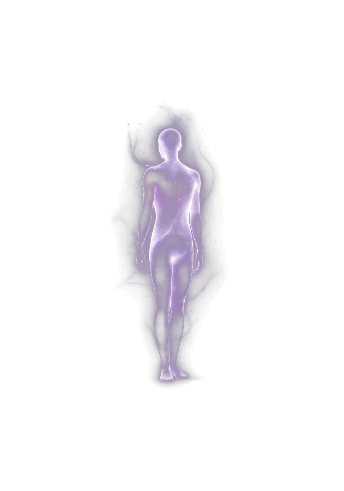
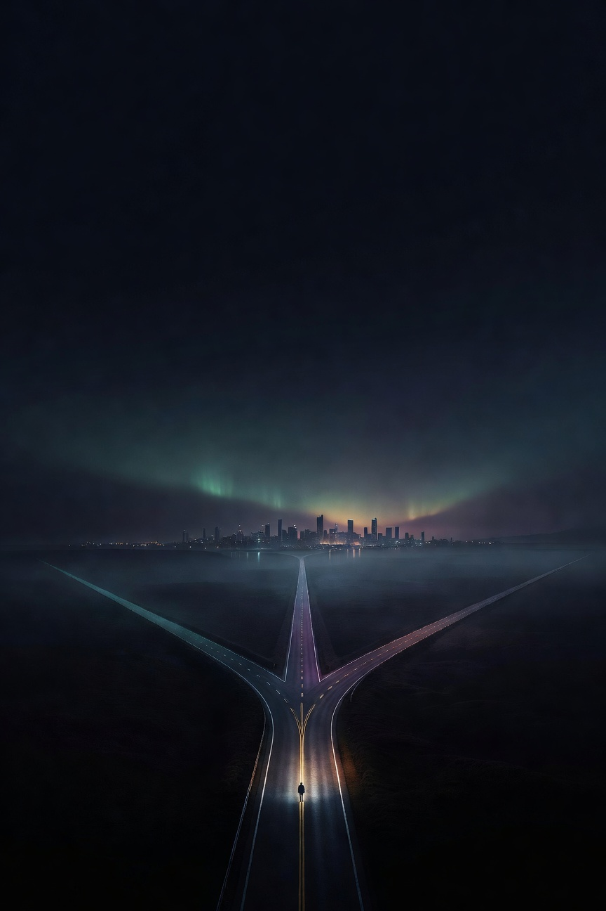

<!DOCTYPE html>
<html lang="ru" class="dark">
<head>
  <meta charset="UTF-8" />
  <meta name="viewport" content="width=device-width, initial-scale=1.0" />
  <title>Дорожная карта будущего — Life Design</title>
  <link rel="preconnect" href="https://fonts.googleapis.com" />
  <link rel="preconnect" href="https://fonts.gstatic.com" crossorigin />
  <link href="https://fonts.googleapis.com/css2?family=Inter:wght@300;400;500;600;700;800&family=Manrope:wght@400;500;600;700;800&display=swap" rel="stylesheet" />
  <script src="https://cdn.tailwindcss.com"></script>
  <script>
    tailwind.config = { darkMode:'class', theme:{ extend:{
      fontFamily:{ sans:['Inter','system-ui','sans-serif'], display:['Manrope','Inter','sans-serif'] },
      colors:{ night:{ 900:'#070B14', 800:'#0C1220', 700:'#131B2C', 600:'#1B2438' } },
      boxShadow:{ 'glow-teal':'0 0 22px rgba(45,212,191,0.40)', 'glow-violet':'0 0 22px rgba(167,139,250,0.45)', 'glow-amber':'0 0 24px rgba(251,191,36,0.45)' },
    }}};
  </script>
  <style>
    html,body{font-family:'Inter',sans-serif;background:#070B14;color:#E5E7EB;margin:0}
    .font-display{font-family:'Manrope',sans-serif}
    .grain{background-image:radial-gradient(rgba(255,255,255,0.012) 1px,transparent 1px);background-size:3px 3px}
    .glass{background:rgba(12,18,32,0.55);backdrop-filter:blur(14px);-webkit-backdrop-filter:blur(14px);border:1px solid rgba(255,255,255,0.07)}
    .glass-strong{background:rgba(12,18,32,0.9);backdrop-filter:blur(16px);border:1px solid rgba(255,255,255,0.10)}
    ::-webkit-scrollbar{width:7px;height:7px}::-webkit-scrollbar-thumb{background:rgba(100,116,139,0.28);border-radius:4px}
    .thin-scroll::-webkit-scrollbar{width:6px}.thin-scroll::-webkit-scrollbar-thumb{background:rgba(100,116,139,0.22);border-radius:3px}
    @keyframes fadeIn{from{opacity:0}to{opacity:1}}
    @keyframes slideUp{from{opacity:0;transform:translateY(18px) scale(.97)}to{opacity:1;transform:none}}
    .modal-overlay{animation:fadeIn .2s ease-out}.modal-content{animation:slideUp .3s cubic-bezier(.16,1,.3,1)}
    @keyframes dashFlow{to{stroke-dashoffset:-28}}.path-flow{animation:dashFlow 2.8s linear infinite}
    @keyframes ringPulse{0%{transform:scale(1);opacity:.7}100%{transform:scale(2.2);opacity:0}}.ring-pulse{animation:ringPulse 2.6s ease-out infinite}
    @keyframes auraPulse{0%,100%{opacity:.5;transform:scale(1)}50%{opacity:.85;transform:scale(1.06)}}.aura-pulse{animation:auraPulse 5s ease-in-out infinite}
    @keyframes waveShift{from{transform:translateX(0)}to{transform:translateX(-50%)}}.wave-anim{animation:waveShift 7s linear infinite}
    @keyframes introUp{from{opacity:0;transform:translateY(14px)}to{opacity:1;transform:none}}.intro-up{animation:introUp .7s cubic-bezier(.16,1,.3,1) both}
    @keyframes blink{0%,80%,100%{opacity:.25}40%{opacity:1}}.dot{animation:blink 1.2s infinite}
    .hub-scale{transform:translate(-50%,-50%) scale(1)}
    @media(max-width:1280px){.hub-scale{transform:translate(-50%,-50%) scale(.85)}}
    @media(max-width:640px){.hub-scale{transform:translate(-50%,-50%) scale(.62)}}
    .lift{transition:transform .22s cubic-bezier(.16,1,.3,1),box-shadow .22s,border-color .22s}
    .lift:hover{transform:translateY(-2px);box-shadow:0 12px 30px rgba(0,0,0,0.35)}
    .stagger>*{animation:introUp .55s cubic-bezier(.16,1,.3,1) both}
    .stagger>*:nth-child(1){animation-delay:.04s}.stagger>*:nth-child(2){animation-delay:.10s}.stagger>*:nth-child(3){animation-delay:.16s}.stagger>*:nth-child(4){animation-delay:.22s}.stagger>*:nth-child(5){animation-delay:.28s}.stagger>*:nth-child(6){animation-delay:.34s}.stagger>*:nth-child(7){animation-delay:.40s}.stagger>*:nth-child(8){animation-delay:.46s}.stagger>*:nth-child(n+9){animation-delay:.5s}
    @keyframes popIn{from{opacity:0;transform:scale(.97)}to{opacity:1;transform:none}}.pop{animation:popIn .4s cubic-bezier(.16,1,.3,1) both}
    button,a{-webkit-tap-highlight-color:transparent}
    @media(prefers-reduced-motion:reduce){*{animation-duration:.001ms!important;transition-duration:.001ms!important}}
  </style>
  <script crossorigin src="https://unpkg.com/react@18/umd/react.production.min.js"></script>
  <script crossorigin src="https://unpkg.com/react-dom@18/umd/react-dom.production.min.js"></script>
  <script crossorigin src="https://unpkg.com/@babel/standalone/babel.min.js"></script>
</head>
<body class="grain">
  <div id="root"></div>
  <script type="text/babel" data-presets="react">
    const { useState, useEffect, useMemo, useRef } = React;

    /* ========== ICONS ========== */
    const Icon = ({ name, className="w-5 h-5", stroke=1.8 }) => {
      const p = {
        compass:<><circle cx="12" cy="12" r="10"/><polygon points="16.24 7.76 14.12 14.12 7.76 16.24 9.88 9.88 16.24 7.76"/></>,
        check:<polyline points="20 6 9 17 4 12"/>,
        lock:<><rect x="3" y="11" width="18" height="11" rx="2" ry="2"/><path d="M7 11V7a5 5 0 0 1 10 0v4"/></>,
        star:<polygon points="12 2 15.09 8.26 22 9.27 17 14.14 18.18 21.02 12 17.77 5.82 21.02 7 14.14 2 9.27 8.91 8.26 12 2"/>,
        users:<><path d="M17 21v-2a4 4 0 0 0-4-4H5a4 4 0 0 0-4 4v2"/><circle cx="9" cy="7" r="4"/><path d="M23 21v-2a4 4 0 0 0-3-3.87"/><path d="M16 3.13a4 4 0 0 1 0 7.75"/></>,
        trending:<><polyline points="23 6 13.5 15.5 8.5 10.5 1 18"/><polyline points="17 6 23 6 23 12"/></>,
        target:<><circle cx="12" cy="12" r="10"/><circle cx="12" cy="12" r="6"/><circle cx="12" cy="12" r="2"/></>,
        compassRole:<><circle cx="12" cy="12" r="10"/><polyline points="8 12 11 15 16 9"/></>,
        anchor:<><circle cx="12" cy="5" r="3"/><line x1="12" y1="22" x2="12" y2="8"/><path d="M5 12H2a10 10 0 0 0 20 0h-3"/></>,
        heart:<path d="M20.84 4.61a5.5 5.5 0 0 0-7.78 0L12 5.67l-1.06-1.06a5.5 5.5 0 0 0-7.78 7.78l1.06 1.06L12 21.23l7.78-7.78 1.06-1.06a5.5 5.5 0 0 0 0-7.78z"/>,
        book:<><path d="M4 19.5A2.5 2.5 0 0 1 6.5 17H20"/><path d="M6.5 2H20v20H6.5A2.5 2.5 0 0 1 4 19.5v-15A2.5 2.5 0 0 1 6.5 2z"/></>,
        sparkle:<path d="M12 3l1.9 5.6L20 10l-5.5 1.6L12 17l-1.9-5.6L4 10l5.6-1.6L12 3z"/>,
        globe:<><circle cx="12" cy="12" r="10"/><line x1="2" y1="12" x2="22" y2="12"/><path d="M12 2a15.3 15.3 0 0 1 4 10 15.3 15.3 0 0 1-4 10 15.3 15.3 0 0 1-4-10 15.3 15.3 0 0 1 4-10z"/></>,
        zap:<polygon points="13 2 3 14 12 14 11 22 21 10 12 10 13 2"/>,
        focus:<><circle cx="12" cy="12" r="3"/><path d="M3 7V5a2 2 0 0 1 2-2h2"/><path d="M17 3h2a2 2 0 0 1 2 2v2"/><path d="M21 17v2a2 2 0 0 1-2 2h-2"/><path d="M7 21H5a2 2 0 0 1-2-2v-2"/></>,
        brain:<path d="M9.5 2A2.5 2.5 0 0 1 12 4.5v15a2.5 2.5 0 0 1-4.96.44 2.5 2.5 0 0 1-2.96-3.08 3 3 0 0 1-.34-5.58 2.5 2.5 0 0 1 1.32-4.24 2.5 2.5 0 0 1 1.98-3A2.5 2.5 0 0 1 9.5 2z"/>,
        money:<><line x1="12" y1="1" x2="12" y2="23"/><path d="M17 5H9.5a3.5 3.5 0 0 0 0 7h5a3.5 3.5 0 0 1 0 7H6"/></>,
        flask:<><path d="M9 3h6"/><path d="M10 3v6.5L4.5 18a2 2 0 0 0 1.7 3h11.6a2 2 0 0 0 1.7-3L14 9.5V3"/><line x1="7" y1="15" x2="17" y2="15"/></>,
        horizon:<><circle cx="12" cy="12" r="9"/><path d="M3 12h18"/><path d="M12 3a14 14 0 0 1 0 18"/></>,
        close:<><line x1="18" y1="6" x2="6" y2="18"/><line x1="6" y1="6" x2="18" y2="18"/></>,
        chevron:<polyline points="9 18 15 12 9 6"/>,chevronL:<polyline points="15 18 9 12 15 6"/>,
        bell:<><path d="M18 8a6 6 0 0 0-12 0c0 7-3 9-3 9h18s-3-2-3-9"/><path d="M13.73 21a2 2 0 0 1-3.46 0"/></>,
        clipboard:<><path d="M16 4h2a2 2 0 0 1 2 2v14a2 2 0 0 1-2 2H6a2 2 0 0 1-2-2V6a2 2 0 0 1 2-2h2"/><rect x="8" y="2" width="8" height="4" rx="1"/></>,
        grid:<><rect x="3" y="3" width="7" height="7"/><rect x="14" y="3" width="7" height="7"/><rect x="14" y="14" width="7" height="7"/><rect x="3" y="14" width="7" height="7"/></>,
        message:<path d="M21 15a2 2 0 0 1-2 2H7l-4 4V5a2 2 0 0 1 2-2h14a2 2 0 0 1 2 2z"/>,
        user:<><path d="M20 21v-2a4 4 0 0 0-4-4H8a4 4 0 0 0-4 4v2"/><circle cx="12" cy="7" r="4"/></>,
        map:<><polygon points="1 6 1 22 8 18 16 22 23 18 23 2 16 6 8 2 1 6"/><line x1="8" y1="2" x2="8" y2="18"/><line x1="16" y1="6" x2="16" y2="22"/></>,
        arrowRight:<><line x1="5" y1="12" x2="19" y2="12"/><polyline points="12 5 19 12 12 19"/></>,
        plus:<><line x1="12" y1="5" x2="12" y2="19"/><line x1="5" y1="12" x2="19" y2="12"/></>,
        calendar:<><rect x="3" y="4" width="18" height="18" rx="2"/><line x1="16" y1="2" x2="16" y2="6"/><line x1="8" y1="2" x2="8" y2="6"/><line x1="3" y1="10" x2="21" y2="10"/></>,
        edit:<><path d="M11 4H4a2 2 0 0 0-2 2v14a2 2 0 0 0 2 2h14a2 2 0 0 0 2-2v-7"/><path d="M18.5 2.5a2.12 2.12 0 0 1 3 3L12 15l-4 1 1-4z"/></>,
        shield:<path d="M12 22s8-4 8-10V5l-8-3-8 3v7c0 6 8 10 8 10z"/>,
        send:<><line x1="22" y1="2" x2="11" y2="13"/><polygon points="22 2 15 22 11 13 2 9 22 2"/></>,
        sprout:<><path d="M7 20h10"/><path d="M12 20V10"/><path d="M12 10c0-3-2-5-5-5 0 3 2 5 5 5z"/><path d="M12 12c0-3 2-5 5-5 0 3-2 5-5 5z"/></>,
      };
      return (<svg className={className} viewBox="0 0 24 24" fill="none" stroke="currentColor" strokeWidth={stroke} strokeLinecap="round" strokeLinejoin="round">{p[name]||p.compass}</svg>);
    };

    /* ========== БАЗОВЫЕ ДАННЫЕ ========== */
    const HORIZONS = ['7 дней','30 дней','3 месяца','6 месяцев','1 год','2–3 года'];
    const PNR = '#FB923C', FORK = { x:50, y:92 }, FIG = { x:50, y:86 }, PNR_NODE='pnr', PROTO='prototype';
    const BOT_URL = 'https://t.me/dorozhnaya_karta_bot'; // плейсхолдер — заменить на реальный @username

    const SCENARIOS = [
      { id:'careful', title:'Бережный', orbitName:'Безопасная орбита', tagline:'Развитие без резких разрушений',
        roleOutcome:'Усиление текущей роли эксперта', fit:'если высоки риски и нужна устойчивость',
        accent:'#2DD4BF', preview:'preview-careful.png', dest:{x:14,y:18}, c1:{x:9,y:57}, c2:{x:13,y:33},
        nodes:[
          {kind:'step',label:'Аудит опоры',desc:'Что уже работает и что важно сохранить при изменениях.',tasks:['Карта ресурсов','Что нельзя терять','Зоны усталости']},
          {kind:'step',label:'Уточнение роли',desc:'Усилить текущую экспертную роль, а не ломать её.',tasks:['«Кому я полезен»','Доказательства экспертизы','Язык о себе']},
          {kind:'prototype',label:'Упаковка опыта',desc:'Оформить экспертизу в видимую форму — мини-проверка спроса.',tasks:['Экспертный пост','Мини-услуга','3 разговора']},
          {kind:'step',label:'Первая монетизация',desc:'Аккуратно повысить чек или добавить услугу.',tasks:['Гипотеза цены','Пробное предложение','Сверка устойчивости']},
          {kind:'step',label:'Устойчивая практика',desc:'Стабильный поток без перегрузки.',tasks:['Ритм нагрузки','Регулярные клиенты','Контроль энергии']},
          {kind:'role',label:'Признанный эксперт',desc:'Новая роль закреплена без потери опоры.',tasks:['Позиционирование','Сообщество','Следующий цикл']},
        ]},
      { id:'growth', title:'Рост', orbitName:'Орбита роста', tagline:'Усиление роли, дохода и влияния',
        roleOutcome:'Эксперт → предприниматель / руководитель', fit:'если есть ресурс и амбиция',
        accent:'#A78BFA', preview:'preview-growth.png', dest:{x:50,y:12}, c1:{x:50,y:57}, c2:{x:50,y:33},
        nodes:[
          {kind:'step',label:'Карта ресурсов',desc:'Активы и амбиция: на что опереться в рывке.',tasks:['Опыт и связи','Готовность к риску','Точка отсчёта']},
          {kind:'step',label:'Гипотеза дохода',desc:'Новая модель монетизации опыта.',tasks:['Кому ценность','Формат продукта','Ориентиры']},
          {kind:'prototype',label:'Запуск направления',desc:'Малая безопасная проверка новой модели.',tasks:['MVP за 2 недели','Прямые продажи','Обратная связь']},
          {kind:'step',label:'Первые клиенты',desc:'Подтверждение спроса на новую модель.',tasks:['10 платящих','Кейсы','Уточнение оффера']},
          {kind:'pnr',label:'Система и команда',desc:'Большой шаг: переход в систему и команду — масштаб вместо «соло».',tasks:['Процессы','Первый найм','Делегирование']},
          {kind:'role',label:'Масштаб и влияние',desc:'Устойчивый рост роли, дохода и позиционирования.',tasks:['Каналы','Линейка продуктов','Публичность']},
        ]},
      { id:'breakthrough', title:'Пересборка', orbitName:'Орбита прорыва', tagline:'Новая ниша и идентичность',
        roleOutcome:'Смелая ценностная траектория', fit:'если старая модель исчерпана',
        accent:'#FBBF24', preview:'preview-breakthrough.png', dest:{x:86,y:18}, c1:{x:91,y:57}, c2:{x:87,y:33},
        nodes:[
          {kind:'step',label:'Честный разговор',desc:'Что исчерпано и больше не продолжается по-старому.',tasks:['Что завершилось','Цена старого','Что зовёт']},
          {kind:'step',label:'Образ новой роли',desc:'Кем становлюсь, опираясь на зрелые ценности.',tasks:['Новая идентичность','Ценностная формула','Допустимое будущее']},
          {kind:'prototype',label:'Прототип новой жизни',desc:'7-дневный эксперимент нового образа жизни.',tasks:['7-дн тест','Пробная консультация','Новая среда']},
          {kind:'pnr',label:'Вход в новую роль',desc:'Большой шаг: вы закрепляетесь в новой роли и открываете новый виток.',tasks:['Завершить прежнее','Поделиться со средой','Закрепить границы']},
          {kind:'step',label:'Новая ниша и среда',desc:'Закрепиться в новом пространстве возможностей.',tasks:['Войти в среду','Первые результаты','Связи']},
          {kind:'role',label:'Новая идентичность',desc:'Новая профессиональная и жизненная идентичность собрана.',tasks:['Авторская позиция','Модель дохода','Ритм']},
        ]},
    ];
    const byId = (id) => SCENARIOS.find(s => s.id===id) || SCENARIOS[1];
    const NAV = [
      { id:'map', label:'Карта', icon:'map' }, { id:'profile', label:'Профиль', icon:'user' },
      { id:'journal', label:'Дневник', icon:'book' }, { id:'resources', label:'Ресурсы', icon:'grid' }, { id:'mentor', label:'Ментор', icon:'message' },
    ];
    const USER = { name:'Мария Ковалёва', role:'Эксперт · точка перехода' };
    const STAGES = [{id:1,name:'Диагностика'},{id:2,name:'Ценности'},{id:3,name:'Идентичность'},{id:4,name:'Сценарии'},{id:5,name:'Дорожная карта'},{id:6,name:'Сопровождение'}];
    const LIFE_SPACES = [{key:'energy',label:'Энергия',icon:'zap'},{key:'focus',label:'Фокус',icon:'focus'},{key:'skills',label:'Навыки',icon:'brain'},{key:'env',label:'Окружение',icon:'users'},{key:'finance',label:'Деньги',icon:'money'}];
    const VALUE_ICONS = {'Свобода':'compass','Развитие':'trending','Достоинство':'star','Влияние':'sparkle','Творчество':'sparkle','Опора':'anchor','Семья':'heart','Знания':'book','Служение':'heart'};
    const ALL_VALUES = ['Свобода','Развитие','Достоинство','Влияние','Творчество','Опора','Семья','Знания','Служение'];

    // ЕДИНАЯ АНОНИМНАЯ АНКЕТА (39 вопросов, 9 блоков). type: single|multi|scale|open. max — лимит выбора.
    const ANKETA = [
      { id:'b1', title:'Точка А', sub:'Без персональных данных', qs:[
        { id:'age', type:'single', q:'Возрастной диапазон', opts:['До 25','25–34','35–44','45–54','55–64','65+','Не хочу отвечать'] },
        { id:'geo', type:'single', q:'Где вы сейчас живёте?', opts:['Москва / Санкт-Петербург','Крупный город','Средний город','Малый город / посёлок','Сельская территория','За пределами России','Часто меняю место','Не хочу отвечать'] },
        { id:'edu', type:'multi', q:'Образование и текущая социальная роль', opts:['Среднее / спец.','Высшее','Несколько образований','Учёная степень','Работаю в найме','Руководящая позиция','Свой бизнес','Фриланс / проекты','Консультации / экспертиза','Творческая деятельность','Временно не работаю','В переходе между направлениями'] },
        { id:'family', type:'multi', q:'Семейный и бытовой контекст', opts:['Значимые семейные обязанности','Дети / иждивенцы','Партнёр / семья','Живу один / одна','Много ответственности за близких','Обстоятельства ограничивают решения','Семья скорее поддерживает','Не хочу отвечать'] },
        { id:'incomeNow', type:'single', q:'Текущий уровень дохода', opts:['до 1000 USD','1000–2000','2000–4000','4000–7000','7000+','Не хочу отвечать'] },
        { id:'incomeWant', type:'single', q:'Желаемый доход через 2–3 года', opts:['2000–4000 USD','4000–6000','6000–9000','9000+','Пока не понимаю'] },
      ]},
      { id:'b2', title:'Социокультурный код', sub:'Что ведёт и что освобождаем', qs:[
        { id:'envFormed', type:'multi', q:'В какой среде вы формировались?', opts:['Небольшой город: устойчивость, труд','Большой город: конкуренция, статус','Сильная трудовая этика','Интеллигентная / образованная среда','Предпринимательская среда','Мало поддержки — всё сам(а)','Забота, но мало свободы выбора','Долг, служение, польза','Выживание и безопасность','Связи, статус, признание','Среда без права на ошибку','Желания часто откладывались'] },
        { id:'inherited', type:'multi', q:'Какие установки вы унаследовали?', opts:['Деньги достаются тяжело','Большие деньги опасны/стыдно','Главное — стабильность','Не высовывайся','Надо быть полезным(ой)','Сначала долг, потом желания','Успех требует жертвы','Нужна «нормальная» профессия','Семью нельзя разочаровывать','Сильные справляются сами','Я могу быть автором своей жизни','Сначала надо заслужить своё'] },
        { id:'successMeant', type:'multi', q:'Что в вашей среде считалось успехом?', opts:['Стабильная работа','Хорошее образование','Высокая должность','Свой бизнес','Семья и дети','Деньги и имущество','Уважение людей','Служение и польза','Свобода и независимость','Творческая реализация','Публичное признание','Выход в большую среду'] },
        { id:'codeThemes', type:'multi', max:5, q:'Какие темы в вашем коде особенно сильны?', opts:['Долг','Стабильность','Труд','Терпение','Образование','Статус','Деньги','Скромность','Свобода','Безопасность','Служение','Семья','Самостоятельность','Ответственность за других','Право быть автором своей жизни'] },
        { id:'innerPhrase', type:'open', q:'Какая внутренняя или семейная фраза звучит у вас внутри?', ph:'Одна фраза, без личных деталей' },
        { id:'codeResource', type:'multi', max:5, q:'Что в вашем коде — ресурс?', opts:['Трудолюбие','Ответственность','Образование','Дисциплина','Выносливость','Забота о близких','Уважение к знаниям','Чувство достоинства','Опыт преодоления','Способность помогать','Умение держать слово','Глубина мышления','Способность учиться','Самостоятельность'] },
        { id:'codeLimit', type:'multi', max:5, q:'Что сейчас может ограничивать? (мягко переведём в рост)', opts:['Привычка всё тянуть на себе','Откладывание себя','Высокая планка к себе','Сдержанность в публичности','Привычка терпеть','Зависимость от мнения близких','Бережность к стабильности','Скромность в цене','Выбор «правильно», а не по-своему','Недоверие к своим желаниям'] },
        { id:'keepDrop', type:'open', q:'Что важно сохранить, а что — не тащить дальше?', ph:'1–2 строки про ресурс и про ограничение' },
      ]},
      { id:'b3', title:'Точка перехода', sub:'Где вы сейчас', qs:[
        { id:'situation', type:'multi', max:2, q:'Какая фраза точнее описывает ситуацию?', opts:['Внешне нормально, но внутри пусто/усталость','Вырос(ла) из прежней роли','Хочу сменить профессию/нишу/доход','Хочу больше дохода и признания','Стою перед важным выбором','В кризисе, нужно собрать себя заново','Чувствую потенциал, но не знаю как','Хочу новую траекторию жизни'] },
        { id:'trigger', type:'multi', max:3, q:'Что стало поводом задуматься именно сейчас?', opts:['Возрастной рубеж (35+/40+/45+/50+)','Усталость от прежней роли','Конкретное событие','Желание нового уровня дохода','Потеря смысла при стабильности','Чужой вдохновляющий пример','«Пора, дальше так нельзя»','Старая стратегия не работает'] },
        { id:'noMore', type:'open', q:'Опишите вашу точку «так больше не хочу»', ph:'2–4 предложения, без персональных данных' },
      ]},
      { id:'b4', title:'Роль и капитал', sub:'Ваша будущая полезность', qs:[
        { id:'tightRole', type:'multi', max:3, q:'Какая роль стала тесной?', opts:['Исполнитель','Тот, кто всё тянет на себе','Удобный для всех','Эксперт, который хочет масштаба','Роль, где мало места для себя','Уставший от прежней ответственности','Сильный, кто не просит поддержки','Большой опыт без новой формы'] },
        { id:'proCapital', type:'multi', q:'Какой профессиональный капитал уже есть?', opts:['Высшее образование','Экспертность в профессии','Управленческий опыт','Наставничество / консультирование','Предпринимательский опыт','Публичность / блог / бренд','Продажи / переговоры','Цифровые навыки','Международный опыт','Сильная репутация','Опыт преодоления кризисов','Умение структурировать хаос','Умение поддерживать людей'] },
        { id:'whatClearer', type:'open', q:'Что вы умеете так, что другим становится яснее/легче/сильнее?', ph:'Важно для будущей роли и модели дохода' },
        { id:'usefulTo', type:'multi', q:'Кому может быть полезен ваш опыт?', opts:['Людям в профессиональном переходе','Предпринимателям / экспертам','Руководителям','Молодёжи / студентам','Людям 35+','Командам / организациям','Людям в кризисе смысла','Тем, кому нужна структура','Пока не понимаю'] },
      ]},
      { id:'b5', title:'Деньги и рост', sub:'Экономическая траектория', qs:[
        { id:'moneyAttitude', type:'multi', q:'Как вы относитесь к деньгам и росту дохода?', opts:['Хочу больше, но не понимаю на чём','Сложно брать деньги за экспертность','Сложно назначать высокую цену','Высокий доход желанен, но напряжён','Готов(а) расти, нужна модель','Деньги = свобода и выбор','Сейчас важнее смысл и опора','Есть доход, но хочу другого уровня','Хочу доход по опыту и статусу'] },
        { id:'moneyStop', type:'multi', q:'Что может останавливать в росте дохода/статуса/публичности?', opts:['Оценка окружающих','Зависть','Потеря стабильности','Публичная ошибка','Назначение цены','Продажа себя','Ответственность','Непонимание близких','Слишком много работы','Ничего особенно не останавливает'] },
      ]},
      { id:'b6', title:'Среда и поддержка', sub:'Социальный капитал', qs:[
        { id:'envNow', type:'multi', max:3, q:'Какая среда сейчас сильнее влияет на вас?', opts:['Семья и близкие','Профессиональное окружение','Те, кто ждёт прежнего поведения','Среда, где я меньше, чем могу быть','Вдохновляющая, но пока не «своя»','Предприним./эксперт./междунар.','Я почти один(а) в изменениях'] },
        { id:'envNeed', type:'multi', max:3, q:'Какая среда нужна для будущей роли?', opts:['Экспертная','Предпринимательская','Интеллектуальная','Международная','Среда наставников','Среда клиентов / партнёров','Прошедшие похожий переход','Спокойная поддерживающая','Пока не понимаю'] },
      ]},
      { id:'b7', title:'Ресурс и готовность', sub:'Темп вашего маршрута', qs:[
        { id:'state', type:'scale', q:'Оцените ваше состояние сейчас (1 — низко, 5 — высоко)', items:['Энергия','Ясность','Внутренняя опора','Готовность действовать','Тревога / напряжение','Усталость / истощение'] },
        { id:'needNow', type:'multi', max:2, q:'Что вам сейчас нужнее?', opts:['Рывок и дисциплина','Структура и пошаговость','Мягкая поддержка','Восстановление ресурса','Честная диагностика','Сопровождение внедрения','Пока не знаю'] },
        { id:'blockers', type:'multi', max:3, q:'Что больше всего мешает двигаться?', opts:['Нет ясности','Нет энергии','Нет времени','Нет денег на развитие','Нет поддержки','Внутреннее сопротивление','Непонимание рынка','Неумение себя презентовать','Слишком много вариантов','Не хватает дисциплины','Не понимаю, что главное','Бережность к стабильности'] },
        { id:'tried', type:'multi', q:'Что уже пробовали?', opts:['Коучинг','Психолог / терапия','Карьерные консультации','Бизнес-консультации','Обучение / курсы','Самостоятельное планирование','Разговоры с близкими / наставниками','Смена работы / страны / окружения','Ничего системного пока'] },
        { id:'whyFailed', type:'multi', q:'Почему прежние попытки не дали результата?', opts:['Было вдохновение, но не было системы','Много анализа, мало действий','Действия без понимания себя','Слишком общие советы','Не было работы с деньгами/реальностью','Не было глубины','Не было поддержки на внедрении','Быстро терял(а) фокус'] },
      ]},
      { id:'b8', title:'Приоритеты и формат', sub:'Куда направить фокус', qs:[
        { id:'rebuild', type:'multi', max:3, q:'Какие темы требуют пересборки сильнее всего?', opts:['Профессия и реализация','Деньги и доход','Личная идентичность','Отношения и окружение','Тело, энергия, ресурс','Смысл, ценности, опора','Статус, публичность','Свобода, новый образ жизни','Личный бренд / продукт','Баланс семья—работа—я'] },
        { id:'scenario', type:'single', q:'Какой сценарий будущего вам сейчас ближе?', opts:['Осторожный: сохранить основу, двигаться постепенно','Ростовой: усилить роль, доход, позиционирование','Трансформационный: серьёзно изменить профессию/жизнь','Восстановительный: сначала вернуть ресурс, потом стратегия','Пока не понимаю — хочу увидеть варианты'] },
        { id:'valuableResult', type:'multi', max:3, q:'Какой результат через 2–3 месяца был бы ценным?', opts:['Понять, куда двигаться','Собрать новую роль','Соединить смысл, деньги, реализацию','Найти подходящий источник дохода','Получить опору и спокойствие','Увидеть первые шаги и контрольные точки','Понять, какую среду усилить','Перестать метаться между сценариями'] },
        { id:'helpFormat', type:'single', q:'Какая форма помощи была бы ценнее всего?', opts:['Диагностическая встреча «Точка перехода»','Полная «Дорожная карта» на 2–3 года','Сопровождение с внедрением','Разбор роли, дохода, позиционирования','Глубинная работа с ценностями и сценариями','Сначала первичный разбор','Мягкий подготовительный этап'] },
      ]},
      { id:'b9', title:'Главный узел', sub:'Соберём вывод', qs:[
        { id:'keepHave', type:'multi', max:5, q:'Имею и хочу сохранить', opts:['Семья / близкие','Опыт / профессию','Доход / стабильность','Свободу / самостоятельность','Здоровье / ресурс','Репутацию / статус','Образование / знания','Ценностную опору','Социальные связи','Способность помогать'] },
        { id:'dropHave', type:'multi', max:5, q:'Имею, но не хочу тащить дальше', opts:['Перегруз','Усталость','Чужие ожидания','Низкий доход','Старую роль','Хаос / неопределённость','Высокую планку к себе','Зависимость от мнения среды','Откладывание себя','Жизнь без ясного маршрута'] },
        { id:'createWant', type:'multi', max:5, q:'Не имею, но хочу создать', opts:['Ясность','Новую роль','Рост дохода','Личный бренд / продукт','Новую среду','Внутреннюю опору','План на 2–3 года','Контрольные точки','Свободу выбора','Смысл и реализацию'] },
        { id:'avoidFuture', type:'multi', max:5, q:'Чего не хочу в будущем', opts:['Потери стабильности','Одиночества','Публичного провала','Зависимости от чужого мнения','Выгорания','Жизни без смысла','Обнуления прошлого опыта','Резкого хаотичного перехода','Потери связи с близкими','Финансовой небезопасности'] },
        { id:'mainKnot', type:'single', q:'Один главный узел — что сильнее всего влияет сейчас?', opts:['Нет ясности, куда двигаться','Старая роль стала тесной','Не хватает дохода / модели денег','Сильная усталость, низкий ресурс','Бережность к стабильности','Семейные / культурные установки','Нет среды и поддержки','Много опыта, но нет новой формы','Не могу выбрать между сценариями'] },
        { id:'finalFormula', type:'open', q:'Финальная формула', ph:'Сейчас мой переход не про ___, а про ___. Важно сохранить ___, отпустить ___ и проверить ___' },
      ]},
    ];
    const SCEN_MAP = { 'Осторожный: сохранить основу, двигаться постепенно':'careful', 'Ростовой: усилить роль, доход, позиционирование':'growth', 'Трансформационный: серьёзно изменить профессию/жизнь':'breakthrough', 'Восстановительный: сначала вернуть ресурс, потом стратегия':'careful' };
    function computeResult(answers) {
      const a = answers || {};
      const arr = (id)=>Array.isArray(a[id])?a[id]:[];
      const sc = { careful:1, growth:1, breakthrough:1 };
      const scen = a.scenario;
      if (scen && SCEN_MAP[scen]) sc[SCEN_MAP[scen]] += 4;
      const sit = arr('situation');
      if (sit.some(s=>/выросла? из прежней роли/i.test(s))) sc.growth+=2;
      if (sit.some(s=>/сменить профессию/i.test(s)||/новую траекторию/i.test(s))) sc.breakthrough+=2;
      if (sit.some(s=>/больше дохода/i.test(s))) sc.growth+=2;
      if (sit.some(s=>/кризисе/i.test(s)||/внутри пусто/i.test(s))) sc.careful+=2;
      const need = arr('needNow');
      const restorative = scen && /Восстановительный/i.test(scen) || need.some(n=>/Восстановление ресурса|Мягкая поддержка/i.test(n));
      if (restorative) sc.careful+=2;
      arr('rebuild').forEach(r=>{ if(/идентичность|свобода|образ жизни|бренд/i.test(r)) sc.breakthrough+=0.6; if(/доход|статус|реализац/i.test(r)) sc.growth+=0.6; });
      const total = sc.careful+sc.growth+sc.breakthrough;
      const match = { careful:Math.round(sc.careful/total*100), growth:Math.round(sc.growth/total*100), breakthrough:Math.round(sc.breakthrough/total*100) };
      const recommended = ['breakthrough','growth','careful'].reduce((x,y)=> sc[y]>sc[x]?y:x, 'careful');
      // Готовность по шкале состояния (Q25)
      const st = a.state || {};
      const v = (k,d)=> typeof st[k]==='number'?st[k]:d;
      const pos = (v('Энергия',3)+v('Ясность',3)+v('Внутренняя опора',3)+v('Готовность действовать',3))/4;
      const neg = (v('Тревога / напряжение',3)+v('Усталость / истощение',3))/2;
      let readiness = Math.round((pos-1)/4*100 - (neg-1)/4*38);
      if (restorative) readiness = Math.min(readiness, 52);
      readiness = Math.min(95, Math.max(28, readiness));
      const clampS=(x)=>Math.min(96,Math.max(34,Math.round(x)));
      const sustainBy = { careful:clampS(86+(readiness-50)*0.15), growth:clampS(70+(readiness-50)*0.2), breakthrough:clampS(54+(readiness-50)*0.28) };
      const valSrc = arr('keepHave').length?arr('keepHave'):(arr('codeThemes').length?arr('codeThemes'):['Опора','Развитие','Свобода']);
      const values = valSrc.slice(0,3);
      const spaces = {
        energy: Math.round(v('Энергия',3)/5*100),
        focus: Math.round(v('Ясность',3)/5*100),
        skills: Math.min(95, 45+arr('proCapital').length*5),
        env: Math.min(92, 40+arr('envNeed').length*6),
        finance: Math.min(92, 45+arr('moneyAttitude').filter(x=>/готов|свобода|уровня|опыту/i.test(x)).length*10),
      };
      return { match, recommended, readiness, values, spaces, sustainBy, sustain:sustainBy[recommended], restorative:!!restorative,
        socioResource:arr('codeResource'), socioLimit:arr('codeLimit'), mainKnot:a.mainKnot||null, finalFormula:a.finalFormula||'', helpFormat:a.helpFormat||null, ts:Date.now() };
    }

    const bez = (p0,c1,c2,p3,t) => { const u=1-t,a=u*u*u,b=3*u*u*t,c=3*u*t*t,d=t*t*t; return { x:a*p0.x+b*c1.x+c*c2.x+d*p3.x, y:a*p0.y+b*c1.y+c*c2.y+d*p3.y }; };
    const pathD = (s) => `M ${FORK.x} ${FORK.y} C ${s.c1.x} ${s.c1.y}, ${s.c2.x} ${s.c2.y}, ${s.dest.x} ${s.dest.y}`;
    const nodeT = (i) => 0.16 + 0.82*Math.pow(i/(HORIZONS.length-1),1.1);
    const nodePos = (s,i) => bez(FORK, s.c1, s.c2, s.dest, nodeT(i));
    // Прогрессивная разблокировка: веха активна, если пройдена предыдущая; дальше — закрыто до достижения.
    const withStatus = (n,i,doneSteps,sid) => { const d=(k)=>!!(doneSteps && doneSteps[sid+'-'+k]); if (d(i)) return {...n,status:'done'}; return {...n,status:(i===0||d(i-1))?'active':'upcoming'}; };

    /* ========== КОНТЕНТ ПО ОСНОВЕ ========== */
    // Профиль (демо-персона) — итоговый продукт + психология + соцкультурный код
    const PROFILE_DATA = {
      transition:'Прежняя роль руководителя стала тесной: появился запрос на новую форму реализации. Триггер — ощущение «выросла из роли» и желание новой траектории без резких разрушений.',
      portrait:{ decisionStyle:'Взвешенный аналитик: сильна в стратегии, склонна перепроверять перед решением.', strengths:['Стратегическое мышление','Экспертиза 15 лет','Коммуникация','Обучаемость'], vulnerabilities:['Перфекционизм','Тенденция откладывать смелый шаг','Берёт слишком много на себя'] },
      identity:{ was:'Наёмный руководитель', now:'Эксперт-консультант', becoming:'Автор методики и наставник' },
      proCapital:['15 лет опыта','Управленческий опыт','Экспертиза','Репутация','Сеть контактов'],
      income:['Консалтинг','Авторская методика','Обучающий продукт','Партнёрства'],
      resources:['Победная стратегия: довести сложное до результата','Опыт преодолённых кризисов','Доверие аудитории и коллег'],
      risks:['Бережно к стабильности — двигаемся постепенно','Публичность вводим маленькими шагами','Под нагрузкой опираемся на ритм и восстановление'],
      skills:[
        ['Понимание себя','видеть причины запроса, а не симптомы'],['Осознанный выбор','отличать своё от давления среды'],
        ['Проектирование будущего','видеть 2–3 сценария, а не один'],['Личная стратегия','связать ценности, роль, рынок, сроки'],
        ['Профсамоопределение','выбрать роль/нишу как опору'],['Экономическое мышление','связать ценность и доход'],
        ['Личное позиционирование','яснее описывать себя рынку'],['Работа с неопределённостью','двигаться через гипотезы'],
        ['Digital/AI-навигация','использовать цифру и AI как опору'],['Реализация карты','перейти от инсайта к действию'],
        ['Эмоциональная грамотность','понимать, какое чувство ведёт решение'],['Телесная навигация','слышать ресурс и темп тела'],
      ],
    };

    // Социокультурный код — 10 кодов с двойной природой (ресурс↔ограничение), по основе mainDocs.
    // res/lim = 0–100 независимо. Демо-персона «Мария» (эксперт, точка перехода). Позже питается анкетой.
    const SOCIO_CODES = [
      { id:'geo', short:'Гео', name:'Географический', q:'Как место происхождения сформировало ваш масштаб?', governs:'Среда детства, отношение к смене места и масштаба.', res:60, lim:25, resTags:['опыт смены среды','адаптивность'], limTags:['тяга к привычному масштабу'], shift:'Перенести устойчивость прежней среды в больший масштаб — без чувства «не моё место».' },
      { id:'family', short:'Семья', name:'Семейный', q:'Какая семейная программа всё ещё ведёт ваши решения?', governs:'Установки о труде, деньгах, риске и долге.', res:55, lim:50, resTags:['семейная устойчивость','уважение к труду'], limTags:['«не рискуй стабильностью»','долг важнее желания'], shift:'Сохранить опору семьи, но вернуть себе право на собственный риск.' },
      { id:'values', short:'Ценности', name:'Ценностный', q:'На какие ценности вы реально опираетесь при выборе?', governs:'Что даёт энергию и что нельзя предавать.', res:78, lim:18, resTags:['ясная ценностная ось','достоинство'], limTags:['конфликт «свобода ↔ безопасность»'], shift:'Сделать ценности явным критерием решений, а не фоном.' },
      { id:'work', short:'Труд', name:'Трудовой', q:'Какая профессиональная роль соответствует вашему коду?', governs:'Отношение к делу, экспертности, авторству.', res:82, lim:22, resTags:['сильная трудовая этика','доводит до результата','экспертиза 15 лет'], limTags:['исполнитель привычнее автора'], shift:'Перейти из «надёжного исполнителя» в автора и наставника.' },
      { id:'money', short:'Деньги', name:'Денежный', q:'Какой доход вы внутренне разрешаете себе иметь?', governs:'Глубинное отношение к деньгам и цене себя.', res:35, lim:68, resTags:['честность в деньгах'], limTags:['«неудобно брать дорого»','осторожность с большим доходом','скромность в цене'], shift:'Поднять внутренний потолок: цена — это отражение ценности, а не риск.' },
      { id:'status', short:'Статус', name:'Статусный', q:'Какую социальную высоту вы себе разрешаете?', governs:'Публичность, признание, лидерство.', res:38, lim:62, resTags:['уважение коллег'], limTags:['сдержанность в публичности','чувствительность к оценке'], shift:'Разрешить себе видимость как форму пользы, а не как риск.' },
      { id:'freedom', short:'Свобода', name:'Код свободы', q:'Насколько вы готовы быть автором своей траектории?', governs:'Субъектность, отношение к риску и самостоятельности.', res:75, lim:28, resTags:['ценит автономию','авторство решений'], limTags:['ждёт «правильного момента»'], shift:'Действовать через гипотезы, не дожидаясь внешнего разрешения.' },
      { id:'environment', short:'Среда', name:'Код среды', q:'Какая новая среда нужна вам для перехода?', governs:'Где вы «свой» и какая среда тянет вверх.', res:50, lim:52, resTags:['доверие сети'], limTags:['текущая среда не тянет вверх','зависимость от привычного круга'], shift:'Войти в среду, где ваш следующий уровень — норма, а не исключение.' },
      { id:'symbolic', short:'Символы', name:'Символический', q:'Какие символы станут языком вашей карты?', governs:'Личные образы силы, дома и будущего.', res:70, lim:20, resTags:['опора на смыслы','наставничество как символ'], limTags:['ностальгия по прежнему образу себя'], shift:'Дать новой роли свой образ и язык — узнаваемый именно вами.' },
      { id:'future', short:'Будущее', name:'Код будущего', q:'Какой образ будущего для вас внутренне разрешён?', governs:'Допустимые и «невозможные» сценарии.', res:58, lim:45, resTags:['есть притягательный образ'], limTags:['требует «внутреннего разрешения»','часть сценариев = «не для меня»'], shift:'Перевести желанное будущее из «не для меня» в разряд допустимого и выдерживаемого.' },
    ];
    const MONEY_CEILING = { normal:42, allowed:60, desired:85 }; // относительная шкала «внутреннего разрешения», без сумм
    const SUBJECTNESS = 64; // 0 = жду разрешения извне, 100 = автор пути
    const CS_R = 36; // радиус радара в координатах viewBox 0..100
    const csAng = (i) => -Math.PI/2 + i*2*Math.PI/SOCIO_CODES.length;
    const csXY = (r,a) => `${(50+r*Math.cos(a)).toFixed(2)},${(50+r*Math.sin(a)).toFixed(2)}`;
    const csPoly = (key) => SOCIO_CODES.map((c,i)=>csXY((c[key]/100)*CS_R, csAng(i))).join(' ');

    const PROFILE_SECTIONS = [
      ['transition','Точка перехода','compass'],['portrait','Психологический портрет','brain'],['identity','Карта идентичности','user'],
      ['values','Ценности и смыслы','heart'],['socioCode','Социокультурный код','globe'],['proCapital','Профессиональный капитал','star'],
      ['role','Новая роль и позиционирование','compassRole'],['income','Модель дохода','money'],['resources','Ресурсы и сильные стороны','anchor'],
      ['risks','Зоны внимания и опоры','shield'],['scenarios','Три сценария будущего','trending'],['skills','Skill-карта','sparkle'],
      ['environment','Карта среды','globe'],['valuechain','Цепочка реализации','zap'],
    ];
    function buildProfile(result) {
      const rec = result ? result.recommended : 'growth';
      const accent = byId(rec).accent;
      const values = result ? result.values : ['Свобода','Развитие','Опора'];
      const readiness = result ? result.readiness : 48;
      const spaces = result ? result.spaces : {energy:64,focus:58,skills:70,env:52,finance:60};
      const match = result ? result.match : {careful:33,growth:34,breakthrough:33};
      const sustainBy = result && result.sustainBy ? result.sustainBy : {careful:86,growth:70,breakthrough:54};
      return { ...PROFILE_DATA, rec, accent, values, readiness, spaces, match, sustainBy };
    }

    // Ресурсы — форматы, что вы получите, пакет, прототипы, отличие, этика
    const FORMATS = [
      { id:'diag', title:'Диагностика перехода', dur:'1 встреча · короткий вход', accent:'#2DD4BF',
        pitch:'За одну встречу определяем вашу точку перехода: что не работает, какая роль стала тесной, какой формат подойдёт.',
        out:['Краткий разбор ситуации','Формулировка настоящего запроса','Карта ресурсов и ограничений','Гипотеза траектории','Рекомендация формата'] },
      { id:'roadmap', title:'Alive Roadmap', dur:'10 недель · основной продукт', accent:'#A78BFA', main:true,
        pitch:'Глубокая сборка личности, роли и будущего: от точки перехода до дорожной карты на 2–3 года.',
        out:['Персональный аналитический отчёт','Психологический портрет и идентичность','Расшифровка социокультурного кода','Новая роль и модель дохода','Три сценария и прототипы','Дорожная карта 2–3 года + контрольные точки'] },
      { id:'premium', title:'Premium-сопровождение', dur:'3 месяца внедрения', accent:'#FBBF24',
        pitch:'Переводим карту в реальные шаги: новую роль, решения, доходную модель, среду — с контрольными сессиями.',
        out:['Внедрение первых шагов','Контрольные сессии и сверка','Коррекция маршрута','Поддержка новой роли','Уточнённый план на 3–6 месяцев'] },
    ];
    const recommendFormat = (result) => !result ? null : (result.match[result.recommended] >= 55 ? 'roadmap' : 'diag');
    const WHAT_YOU_GET = [
      ['Ясность','Где вы сейчас и что на самом деле за запросом','compass'],['Внутренняя опора','Ценности, ресурсы и сценарии','anchor'],
      ['Расшифровка кода','Что помогает, а что ограничивает','globe'],['Новая роль','Образ себя на следующем этапе','compassRole'],
      ['Модель дохода','Как опыт перевести в доход','money'],['Три сценария','Несколько реалистичных вариантов','trending'],
      ['Карта 2–3 года','Этапы, шаги, риски, контрольные точки','map'],['Цифровая поддержка','Telegram-бот и сопровождение','message'],
    ];
    const PACKAGE_ITEMS = [
      'Персональный аналитический отчёт','Карта идентичности','Карта ценностей и смыслов','Карта социокультурного кода',
      'Социальная карта точки А','Карта профессионального капитала','Новая роль и позиционирование','Модель дохода',
      'Три сценария будущего','Прототипы будущего','Lifestyle-план','Дорожная карта на 2–3 года',
    ];
    const PROTOTYPES = [
      ['Экспертный пост','Проверить отклик аудитории','flask'],['Пробная консультация','Проверить формат и спрос','flask'],
      ['Мини-услуга','Малая платная проверка ценности','flask'],['7-дневный эксперимент','Тест нового образа жизни','flask'],
      ['3 разговора со сферой','Разведка новой среды','users'],['Новая среда','Войти в поддерживающее окружение','sprout'],
    ];
    const DIFFERENCES = [
      ['Коучинг','Вопросы — вы сами ищете ответы'],['Тест','Описывает черты по шкалам'],
      ['Терапия','Работа с состоянием и переживаниями'],['Карьерная консультация','Профессия, рынок, резюме'],
    ];
    const ETHICS = {
      can:['Структурированную картину ситуации','Сценарии, приоритеты, контрольные точки','Рекомендации по роли и действиям','Снижение хаоса и рост ясности','Конфиденциальную работу с данными'],
      cannot:['Гарантированное будущее или доход','Точный прогноз без неопределённости','Обязательный рост дохода в сумме','Замену терапии/юридической/медпомощи','Решение за вас — выбор остаётся вашим'],
    };

    // Дневник
    const HORIZON_CHECK = {
      '7 дней':['Сделан первый малый шаг','Зафиксирован запрос словами'],
      '30 дней':['Запущен прототип/проверка','Замечено сопротивление'],
      '3 месяца':['Подтверждён спрос/направление','Сверка устойчивости'],
      '6 месяцев':['Стабильный ритм действий','Скорректирован маршрут'],
      '1 год':['Новая роль проявлена','Доходная гипотеза в работе'],
      '2–3 года':['Траектория закреплена','Новый цикл целей'],
    };
    const PLAN_90 = [
      ['30 дней','Прояснить запрос, собрать ресурсы, выбрать 1 прототип'],
      ['60 дней','Запустить прототип, собрать обратную связь, уточнить оффер'],
      ['90 дней','Решение по направлению, первые результаты, план следующего шага'],
    ];
    const REFLECT_CATS = [['insight','Инсайт','sparkle'],['resist','Сопротивление','shield'],['win','Что получилось','check']];
    const SELF_SUPPORT = ['Возвращаться к ценностям как к фильтру решений','Сверять темп с телом и энергией','Замечать откат в старый сценарий без самокритики'];

    // Ментор — скриптовые темы
    const TG_URL = BOT_URL;
    const TOPICS = [
      { id:'start', label:'С чего начать?', quick:true, match:['начать','начну','первый','старт'],
        build:(c)=>[{type:'text',t:`Начните с ближайшего шага вашей траектории «${c.recTitle}».`},{type:'steps',t:c.activeLabel,items:c.activeTasks},{type:'note',t:'Один маленький шаг важнее идеального плана.'}] },
      { id:'stuck', label:'Я застрял(а) на шаге', quick:true, match:['застрял','не могу','стоп','прокрастин','страшно'],
        build:(c)=>[{type:'text',t:'Это нормально на переходе. Разберём, что именно держит.'},{type:'list',t:'Проверьте:',items:['Это страх или нехватка ресурса?','Какой минимальный безопасный шаг возможен сегодня?','Что нельзя терять — и как это сохранить?']},{type:'note',t:'Если тревога высокая — снизьте масштаб шага, а не бросайте.'}] },
      { id:'compare', label:'Сравнить сценарии', quick:true, match:['сравни','сценари','выбрать путь','куда'],
        build:(c)=>[{type:'text',t:'Три траектории отличаются смелостью перехода:'},{type:'list',items:SCENARIOS.map(s=>s.title+' — '+s.tagline+' ('+c.match[s.id]+'%)')},{type:'text',t:'Вам ближе: '+c.recTitle+'. Выбор за вами — можно идти параллельно.'}] },
      { id:'blockers', label:'Что мне мешает?', quick:true, match:['мешает','барьер','сопротивлен','блок'],
        build:(c)=>[{type:'text',t:'Чаще держат не способности, а привычные опоры:'},{type:'list',items:['Бережность к стабильности','Привычная роль и среда','Денежные и статусные установки']},{type:'note',t:'Их не ломаем — переводим в ресурс и идём бережно.'}] },
      { id:'proto', label:'Подбери прототип', quick:true, match:['прототип','проверить','тест','эксперимент'],
        build:(c)=>[{type:'text',t:'Малая безопасная проверка снижает риск:'},{type:'list',items:['Экспертный пост — отклик аудитории','Пробная консультация — формат и спрос','7-дневный эксперимент — новый ритм']},{type:'cta',t:'Открыть библиотеку методик',to:'resources'}] },
      { id:'income', label:'Про доход', quick:false, match:['доход','деньги','монетиз','цена'],
        build:(c)=>[{type:'text',t:'Доход связываем с ролью и ценностью, без обещаний по сумме.'},{type:'list',items:c.income}, {type:'note',t:'Проверяем доходные гипотезы малыми шагами, не разрушая опору.'}] },
    ];
    const SAFETY = { match:['суицид','не хочу жить','покончить','невыносимо','паническ'], build:()=>[{type:'text',t:'Похоже, сейчас очень тяжело. Это важно и серьёзно.'},{type:'note',t:'Я не заменяю помощь специалиста. Пожалуйста, обратитесь к психологу/врачу, а в кризисе — на линию психологической помощи 8-800-2000-122 (бесплатно, круглосуточно).'}] };
    const buildMentorContext = (result, selected) => {
      const rec = result ? result.recommended : selected;
      const s = byId(rec);
      const active = s.nodes.map((n,i)=>withStatus(n,i)).map((n,i)=>({...n,...s.nodes[i]})).find((n,i)=>withStatus(s.nodes[i],i).status==='active') || s.nodes[2];
      return { hasResult:!!result, rec, recTitle:s.title, accent:s.accent, activeLabel:active.label, activeTasks:active.tasks, match:result?result.match:{careful:33,growth:34,breakthrough:33}, income:PROFILE_DATA.income };
    };
    const matchTopic = (text) => {
      const low = (text||'').toLowerCase();
      if (SAFETY.match.some(w=>low.includes(w))) return SAFETY;
      return TOPICS.find(t => t.match.some(w=>low.includes(w)));
    };

    /* ========== БАЗОВЫЙ UI ========== */
    const Card = ({ children, className='', id, style }) => (<div id={id} style={style} className={`rounded-2xl glass lift ${className}`}>{children}</div>);
    const CardTitle = ({ children, icon }) => (<div className="flex items-center gap-2 mb-3"><Icon name={icon} className="w-3.5 h-3.5 opacity-50"/><div className="font-display font-semibold text-[11px] uppercase tracking-wider opacity-70">{children}</div></div>);
    const SectionHeader = ({ title, subtitle, icon }) => (<div className="mt-6 mb-3 flex items-center gap-2">{icon&&<Icon name={icon} className="w-4 h-4 opacity-60"/>}<div><h2 className="font-display font-bold text-lg leading-tight">{title}</h2>{subtitle&&<p className="text-[12px] opacity-55">{subtitle}</p>}</div></div>);
    const Chip = ({ children, color }) => (<span className="text-[11px] px-2.5 py-1 rounded-full bg-white/8" style={color?{color}:{}}>{children}</span>);
    const Disclaimer = ({ children }) => (<p className="text-[11px] opacity-45 leading-relaxed">{children}</p>);
    const Gauge = ({ value, size=96, stroke=8, label='Готовность' }) => {
      const r=(size-stroke)/2, c=2*Math.PI*r, off=c-(value/100)*c;
      return (<div className="relative" style={{width:size,height:size}}>
        <svg width={size} height={size} className="-rotate-90"><circle cx={size/2} cy={size/2} r={r} stroke="#1A2335" strokeWidth={stroke} fill="none"/><defs><linearGradient id="gg" x1="0" y1="0" x2="1" y2="1"><stop offset="0%" stopColor="#2DD4BF"/><stop offset="100%" stopColor="#A78BFA"/></linearGradient></defs><circle cx={size/2} cy={size/2} r={r} stroke="url(#gg)" strokeWidth={stroke} strokeDasharray={c} strokeDashoffset={off} strokeLinecap="round" fill="none" style={{transition:'stroke-dashoffset 1s ease'}}/></svg>
        <div className="absolute inset-0 flex flex-col items-center justify-center"><div className="font-display font-bold text-xl">{value}%</div><div className="text-[9px] uppercase tracking-wider opacity-55 text-center leading-tight px-2">{label}</div></div></div>);
    };
    const Bar = ({ value, label, icon }) => (<div className="flex items-center gap-2.5"><Icon name={icon} className="w-3.5 h-3.5 opacity-60 shrink-0"/><div className="flex-1"><div className="flex justify-between mb-1"><span className="text-[12px]">{label}</span><span className="text-[12px] font-semibold tabular-nums opacity-80">{value}%</span></div><div className="h-1.5 rounded-full overflow-hidden bg-white/8"><div className="h-full rounded-full bg-gradient-to-r from-teal-400 to-violet-500" style={{width:`${value}%`,transition:'width 1s ease'}}/></div></div></div>);
    const TabFrame = ({ title, icon, children }) => (<div className="h-full lg:overflow-y-auto thin-scroll"><div className="max-w-5xl mx-auto px-4 md:px-6 py-4 pb-24 lg:pb-8 intro-up"><div className="flex items-center gap-2 mb-4"><Icon name={icon} className="w-5 h-5 opacity-70"/><h1 className="font-display font-bold text-xl">{title}</h1></div>{children}</div></div>);
    const EmptyState = ({ onQuiz, hint }) => (<Card className="p-8 text-center max-w-md mx-auto mt-8"><Icon name="compass" className="w-10 h-10 mx-auto opacity-60 mb-3"/><h3 className="font-display font-bold text-lg mb-1">Сначала постройте свой путь</h3><p className="text-[13px] opacity-65 mb-5">{hint||'Заполните короткую анкету — и вкладка наполнится под вашу траекторию.'}</p><button onClick={onQuiz} className="px-5 py-2.5 rounded-xl text-white font-semibold text-sm bg-gradient-to-r from-teal-500 to-violet-600 hover:opacity-90">Заполнить анкету</button></Card>);

    /* ========== ОБОЛОЧКА: TopBar / MobileTabBar ========== */
    const TopBar = ({ tab, onTab, onQuiz }) => (
      <header className="flex items-center justify-between px-4 md:px-5 py-2.5 shrink-0 border-b border-white/5">
        <div className="flex items-center gap-2.5"><div className="w-9 h-9 rounded-xl bg-gradient-to-br from-teal-500 to-violet-600 flex items-center justify-center text-white shadow-glow-violet"><Icon name="compass" className="w-5 h-5" stroke={2}/></div><div className="leading-tight"><div className="font-display font-bold text-[15px]">LIFE DESIGN</div><div className="text-[9px] uppercase tracking-[0.2em] opacity-50">Дорожная карта</div></div></div>
        <nav className="hidden lg:flex items-center gap-1 glass rounded-full px-1.5 py-1">{NAV.map(n=>{const on=tab===n.id;return(<button key={n.id} onClick={()=>onTab(n.id)} className={`flex items-center gap-1.5 px-3.5 py-1.5 rounded-full text-[12px] font-medium transition ${on?'bg-gradient-to-r from-teal-500/80 to-violet-600/80 text-white':'opacity-55 hover:opacity-90'}`}><Icon name={n.icon} className="w-3.5 h-3.5"/><span>{n.label}</span></button>);})}</nav>
        <div className="flex items-center gap-3">
          <button onClick={onQuiz} className="flex items-center gap-1.5 px-2.5 sm:px-3 py-2 sm:py-1.5 rounded-lg text-[12px] font-semibold bg-white/8 hover:bg-white/14 active:scale-95 transition"><Icon name="clipboard" className="w-3.5 h-3.5"/><span className="hidden sm:inline">Анкета</span></button>
          <button className="w-9 h-9 rounded-full relative flex items-center justify-center bg-white/5 hover:bg-white/10"><Icon name="bell" className="w-4 h-4"/><span className="absolute top-2 right-2 w-2 h-2 rounded-full bg-teal-400"/></button>
          <div className="flex items-center gap-2.5"><div className="hidden sm:block text-right leading-tight"><div className="font-semibold text-[13px]">{USER.name}</div><div className="text-[10px] opacity-55">{USER.role}</div></div><div className="w-9 h-9 rounded-full bg-gradient-to-br from-teal-400 to-violet-500 flex items-center justify-center text-white font-bold font-display">{USER.name[0]}</div></div>
        </div>
      </header>
    );
    const MobileTabBar = ({ tab, onTab }) => (<nav className="lg:hidden fixed bottom-0 inset-x-0 z-40 glass-strong border-t border-white/10 flex" style={{paddingBottom:'env(safe-area-inset-bottom,0px)'}}>{NAV.map(n=>{const on=tab===n.id;return(<button key={n.id} onClick={()=>onTab(n.id)} className={`flex-1 flex flex-col items-center gap-0.5 py-2.5 relative transition active:scale-95 ${on?'text-teal-300':'opacity-55'}`}><Icon name={n.icon} className={`w-5 h-5 transition-transform ${on?'scale-110':''}`}/><span className="text-[10px] font-medium">{n.label}</span>{on&&<span className="absolute top-0 h-0.5 w-8 rounded-full bg-gradient-to-r from-teal-400 to-violet-500"/>}</button>);})}</nav>);

    /* ========== КАРТА ========== */
    const Waveform = () => (<div className="h-12 overflow-hidden rounded-lg bg-white/5 relative"><svg className="absolute inset-0 w-[200%] h-full wave-anim" viewBox="0 0 200 48" preserveAspectRatio="none"><defs><linearGradient id="wv" x1="0" x2="1"><stop offset="0%" stopColor="#2DD4BF"/><stop offset="50%" stopColor="#A78BFA"/><stop offset="100%" stopColor="#2DD4BF"/></linearGradient></defs><path d="M0 24 Q 12 6 25 24 T 50 24 T 75 24 T 100 24 T 125 24 T 150 24 T 175 24 T 200 24" fill="none" stroke="url(#wv)" strokeWidth="2" opacity="0.9"/></svg></div>);
    const LeftPanel = ({ result, onQuiz }) => {
      const sp = result?result.spaces:{energy:64,focus:58,skills:70,env:52,finance:60};
      const vals = result?result.values:['Свобода','Развитие','Достоинство','Знания','Опора'];
      const readiness = result?result.readiness:48;
      const stability = result?Math.min(90,55+Math.round((100-result.match.breakthrough)/5)):72;
      return (<aside className="w-full lg:w-64 shrink-0 order-2 lg:order-1 lg:min-h-0 lg:overflow-y-auto thin-scroll lg:pr-1"><div className="grid grid-cols-1 sm:grid-cols-2 lg:grid-cols-1 gap-3 stagger">
        <Card className="p-4"><CardTitle icon="target">Ваш путь</CardTitle><div className="flex items-center gap-3 mb-3"><Gauge value={readiness} label="Прогресс пути"/><div className="text-[12px] opacity-75 leading-snug">{result?`Рекомендованная траектория: ${byId(result.recommended).title}.`:'Заполните анкету, чтобы построить персональную траекторию.'}</div></div><button onClick={onQuiz} className="w-full py-2 rounded-lg text-[12px] font-semibold text-white bg-gradient-to-r from-teal-500 to-violet-600 hover:opacity-90 transition flex items-center justify-center gap-1.5"><Icon name="clipboard" className="w-3.5 h-3.5"/>{result?'Обновить путь':'Заполнить анкету'}</button></Card>
        <Card className="p-4"><CardTitle icon="focus">Текущий статус</CardTitle><div className="space-y-2.5">{LIFE_SPACES.map(m=><Bar key={m.key} label={m.label} icon={m.icon} value={sp[m.key]}/>)}</div></Card>
        <Card className="p-4"><CardTitle icon="heart">Ценности</CardTitle><div className="flex flex-wrap gap-2">{vals.map(v=>(<span key={v} className="flex items-center gap-1.5 text-xs px-2.5 py-1.5 rounded-lg bg-teal-500/12 text-teal-200"><Icon name={VALUE_ICONS[v]||'star'} className="w-3 h-3"/>{v}</span>))}</div></Card>
        <Card className="p-4"><CardTitle icon="zap">Энергия жизни</CardTitle><Waveform/><div className="mt-3"><Bar label="Устойчивость" icon="anchor" value={stability}/></div></Card>
      </div></aside>);
    };
    const NODE_ICON = (n) => n.kind===PNR_NODE?'horizon':n.kind===PROTO?'flask':n.kind==='role'?'compassRole':(n.status==='done'?'check':'star');
    // Гравитационные поля прошлого (по философии «текучести времени»): что тянет назад с приближением к настоящему.
    // Силы ускорения — позитивные ресурсы, которые ведут вперёд (без страхов/фобий).
    const GRAVITY_FIELDS = [
      { label:'Опыт', x:15, y:82, size:76 },
      { label:'Связи', x:85, y:82, size:76 },
      { label:'Ценности', x:27, y:96, size:62 },
      { label:'Энергия', x:73, y:96, size:62 },
    ];
    const GravityWell = ({ label, x, y, size }) => (
      <div className="absolute pointer-events-none select-none" style={{left:`${x}%`,top:`${y}%`,transform:'translate(-50%,-50%)'}}>
        <div className="relative flex items-center justify-center" style={{width:size,height:size}}>
          <div className="absolute inset-0 rounded-full aura-pulse" style={{background:'radial-gradient(circle, rgba(45,212,191,0.22) 12%, rgba(167,139,250,0.14) 48%, transparent 72%)'}}/>
          <span className="relative text-[9px] font-medium text-white/70 text-center leading-tight px-1.5" style={{textShadow:'0 1px 5px #000'}}>{label}</span>
        </div>
      </div>);
    const MapNode = ({ node, pos, accent, dim, onClick }) => {
      const [hov,setHov]=useState(false);
      const up=node.status==='upcoming', active=node.status==='active', pnr=node.kind===PNR_NODE, c=pnr?PNR:accent;
      const below=pos.y<42; const ax=pos.x<26?'left-0':pos.x>74?'right-0':'left-1/2 -translate-x-1/2';
      return (<div className="absolute" onMouseEnter={()=>setHov(true)} onMouseLeave={()=>setHov(false)} style={{left:`${pos.x}%`,top:`${pos.y}%`,transform:'translate(-50%,-50%)',opacity:hov?1:(dim?0.55:1),transition:'opacity .3s',zIndex:hov?40:active?20:10}}>
        <span onClick={onClick} className="absolute left-1/2 top-1/2 -translate-x-1/2 -translate-y-1/2 lg:hidden" style={{width:46,height:46,borderRadius:9999}}/>
        <button onClick={onClick} className="relative flex items-center justify-center transition-transform duration-200 hover:scale-110" style={{width:pnr?34:28,height:pnr?34:28,borderRadius:pnr?8:9999,transform:pnr?'rotate(45deg)':'none',background:up?'rgba(255,255,255,0.10)':`linear-gradient(135deg,${c},${c}cc)`,border:active?'2px solid #fff':'1.5px solid rgba(255,255,255,0.5)',boxShadow:active||hov?`0 0 20px ${c}`:up?'0 2px 8px rgba(0,0,0,0.5)':`0 4px 12px ${c}66`,color:up?'rgba(255,255,255,0.65)':'#fff'}}>
          <span style={{transform:pnr?'rotate(-45deg)':'none',display:'flex'}}><Icon name={up?'lock':NODE_ICON(node)} className="w-3.5 h-3.5" stroke={2.3}/></span>{active&&!pnr&&<span className="absolute inset-0 rounded-full ring-pulse" style={{border:`2px solid ${accent}`}}/>}</button>
        {!dim&&node.horizon&&<span className="absolute left-1/2 top-full -translate-x-1/2 mt-1 text-[8px] font-semibold whitespace-nowrap pointer-events-none" style={{color:c,textShadow:'0 1px 4px #000'}}>{node.horizon}</span>}
        {hov&&<div className={`absolute ${ax} ${below?'top-full mt-3':'bottom-full mb-3'} w-40 p-2.5 rounded-xl pointer-events-none pop`} style={{background:'rgba(11,15,26,0.96)',border:`1px solid ${c}55`,boxShadow:'0 10px 30px rgba(0,0,0,0.55)'}}>
          <div className="text-[9px] uppercase tracking-wider mb-0.5 font-semibold" style={{color:c}}>{node.horizon}{pnr?' · большой шаг':''}</div>
          <div className="text-[12px] font-semibold leading-tight mb-0.5">{node.label}</div>
          <div className="text-[10px] opacity-65 leading-snug">{node.desc}</div></div>}</div>);
    };
    const DestinationCard = ({ s, selected, recommended, match, onClick }) => (<button onClick={onClick} className="absolute text-left transition-transform duration-300" style={{left:`${s.dest.x}%`,top:`${s.dest.y}%`,transform:`translate(-50%,-50%) scale(${selected?1.04:1})`,zIndex:selected?30:15,width:168}}>
      <div className="rounded-xl overflow-hidden glass-strong" style={{borderColor:selected?s.accent:'rgba(255,255,255,0.12)',boxShadow:selected?`0 0 26px ${s.accent}66`:'0 8px 24px rgba(0,0,0,0.5)'}}>
        <div className="relative h-16"><div className="absolute inset-0" style={{background:'linear-gradient(to top, rgba(12,18,32,0.96), transparent 72%)'}}/>{recommended&&<div className="absolute top-1.5 left-1.5 text-[8px] uppercase tracking-wider font-bold px-1.5 py-0.5 rounded text-night-900" style={{background:s.accent}}>Рекомендовано</div>}{match!=null&&<div className="absolute top-1.5 right-1.5 text-[10px] font-bold px-1.5 py-0.5 rounded bg-black/55" style={{color:s.accent}}>{match}%</div>}</div>
        <div className="px-2.5 py-2"><div className="text-[9px] uppercase tracking-wider" style={{color:s.accent}}>{s.orbitName}</div><div className="font-display font-bold text-sm leading-tight">{s.title}</div><div className="text-[10px] opacity-65 leading-tight mt-0.5">{s.tagline}</div></div></div></button>);
    const Figure = ({ pos=FIG, scale=1, sub='Настоящее' }) => (<div className="absolute pointer-events-none hub-scale" style={{left:`${pos.x}%`,top:`${pos.y}%`,zIndex:25,transition:'left .7s cubic-bezier(.16,1,.3,1), top .7s cubic-bezier(.16,1,.3,1)'}}><div style={{transform:`scale(${scale})`,transition:'transform .7s cubic-bezier(.16,1,.3,1)'}}><div className="relative" style={{width:140,height:150}}><div className="absolute inset-0 aura-pulse" style={{background:'radial-gradient(circle at 50% 55%, rgba(167,139,250,0.45), rgba(45,212,191,0.12) 40%, transparent 65%)'}}/><div className="absolute left-1/2 top-1/2 -translate-x-1/2 -translate-y-1/2" style={{width:88,height:130}}></div><div className="absolute left-1/2 -translate-x-1/2" style={{top:'calc(50% + 66px)'}}><div className="px-3 py-1 rounded-full text-[11px] font-display font-bold bg-black/55 backdrop-blur text-white border border-white/15 whitespace-nowrap">Вы здесь · {sub}</div></div></div></div></div>);
    const RoadMap = ({ selected, setSelected, result, doneSteps, onNodeClick }) => {
      const selS = byId(selected);
      const selNodes = selS.nodes.map((n,i)=>({...withStatus(n,i,doneSteps,selS.id),horizon:HORIZONS[i]}));
      const doneN = selNodes.filter(n=>n.status==='done').length;
      const jf = selNodes.length? doneN/selNodes.length : 0;
      const figPos = bez(FORK, selS.c1, selS.c2, selS.dest, 0.02+jf*0.86);
      const figScale = 1 - jf*0.42;
      const activeNode = selNodes.find(n=>n.status==='active') || selNodes[selNodes.length-1];
      const figSub = jf>0 ? `${Math.round(jf*100)}% пути · ${activeNode?activeNode.horizon:''}` : 'старт пути';
      return (
      <div className="flex-1 flex flex-col min-h-0">
        <div className="flex flex-wrap items-center justify-between gap-x-4 gap-y-2 mb-2 shrink-0"><div className="min-w-0"><h1 className="font-display font-bold text-lg md:text-xl leading-tight">Ваш путь · выберите направление</h1><p className="text-[11px] opacity-55 hidden md:block leading-tight">Три траектории расходятся из точки А. {result?'Анкета подсветила рекомендованную.':'Пройдите анкету — построим персональную.'}</p></div><div className="flex gap-2 flex-wrap">{SCENARIOS.map(s=>(<button key={s.id} onClick={()=>setSelected(s.id)} className={`px-2.5 py-1.5 rounded-lg border transition flex items-center gap-2 ${selected===s.id?'scale-[1.03]':'opacity-70 hover:opacity-100'}`} style={{background:`${s.accent}1f`,borderColor:selected===s.id?s.accent:`${s.accent}55`,boxShadow:selected===s.id?`0 0 16px ${s.accent}55`:'none'}}><span className="w-2 h-2 rounded-full" style={{background:s.accent}}/><span className="font-display font-bold text-[13px]" style={{color:s.accent}}>{s.title}</span></button>))}</div></div>
        <div className="relative rounded-2xl overflow-hidden border border-white/5 intro-up min-h-[340px] sm:min-h-[420px] lg:min-h-0 lg:flex-1 bg-night-900">
          
          <div className="absolute inset-0 pointer-events-none" style={{background:'linear-gradient(to bottom, rgba(7,11,20,0.55) 0%, rgba(7,11,20,0.05) 30%, rgba(7,11,20,0) 55%, rgba(7,11,20,0.45) 100%)'}}/>
          <div className="absolute inset-0 pointer-events-none" style={{background:'radial-gradient(circle at 50% 43%, rgba(255,224,178,0.30), transparent 24%)',opacity:0.12+jf*0.5,transition:'opacity .7s'}}/>
          {GRAVITY_FIELDS.map((g,i)=><GravityWell key={i} {...g}/>)}
          <div className="absolute top-2.5 left-1/2 -translate-x-1/2 text-[10px] uppercase tracking-[0.2em] text-white/45 pointer-events-none" style={{textShadow:'0 1px 6px #000'}}>Будущее · поле возможностей</div>
          <div className="absolute top-8 left-1/2 -translate-x-1/2 flex items-center gap-2 px-3 py-1 rounded-full bg-black/45 backdrop-blur border border-white/10 pointer-events-none" style={{boxShadow:`0 0 14px ${selS.accent}33`}}><span className="text-[10px] opacity-70 whitespace-nowrap">Пройдено пути</span><div className="w-20 sm:w-28 h-1.5 rounded-full bg-white/12 overflow-hidden"><div className="h-full rounded-full" style={{width:`${jf*100}%`,background:selS.accent,transition:'width .7s cubic-bezier(.16,1,.3,1)'}}/></div><span className="text-[11px] font-bold tabular-nums" style={{color:selS.accent}}>{Math.round(jf*100)}%</span></div>
          <div className="absolute bottom-2.5 left-3 text-[9px] uppercase tracking-[0.18em] text-white/35 pointer-events-none" style={{textShadow:'0 1px 6px #000'}}>Силы, ведущие вперёд</div>
          <svg className="absolute inset-0 w-full h-full pointer-events-none" viewBox="0 0 100 100" preserveAspectRatio="none"><defs>{SCENARIOS.map(s=>(<linearGradient key={s.id} id={`g-${s.id}`} x1="0" x2="1" y1="1" y2="0"><stop offset="0%" stopColor={s.accent} stopOpacity="0.25"/><stop offset="100%" stopColor={s.accent} stopOpacity="1"/></linearGradient>))}</defs>{SCENARIOS.map(s=>{const sel=selected===s.id;const d=pathD(s);return(<g key={s.id}><path id={`p-${s.id}`} d={d} fill="none" stroke={s.accent} strokeOpacity={sel?0.55:0.18} strokeWidth={sel?1.3:0.8} strokeLinecap="round" style={{filter:`drop-shadow(0 0 ${sel?2.5:1.5}px ${s.accent})`}}/><path d={d} fill="none" stroke={`url(#g-${s.id})`} strokeWidth={sel?0.55:0.35} strokeLinecap="round" strokeDasharray="1.4 1.3" className={sel?'path-flow':''}/></g>);})}{selected&&(<path key="travel" d={pathD(selS)} pathLength="1" fill="none" stroke={selS.accent} strokeWidth="1.7" strokeLinecap="round" strokeDasharray={`${jf} 1`} style={{filter:`drop-shadow(0 0 3px ${selS.accent})`,transition:'stroke-dasharray .7s cubic-bezier(.16,1,.3,1)'}}/>)}{selected&&(<g key={selected}><circle r="1.7" fill={byId(selected).accent} opacity="0.35"><animateMotion dur="3.6s" repeatCount="indefinite"><mpath href={`#p-${selected}`}/></animateMotion></circle><circle r="1" fill="#fff" style={{filter:`drop-shadow(0 0 3px ${byId(selected).accent})`}}><animateMotion dur="3.6s" repeatCount="indefinite"><mpath href={`#p-${selected}`}/></animateMotion></circle></g>)}</svg>
          {SCENARIOS.map(s=>s.nodes.map((n,i)=>{const node={...withStatus(n,i,doneSteps,s.id),horizon:HORIZONS[i]};return(<MapNode key={`${s.id}-${i}`} node={node} pos={nodePos(s,i)} accent={s.accent} dim={selected!==s.id} onClick={()=>onNodeClick({...node,scenario:s,sid:s.id,idx:i})}/>);}))}
          {SCENARIOS.map(s=>(<DestinationCard key={s.id} s={s} selected={selected===s.id} recommended={result&&result.recommended===s.id} match={result?result.match[s.id]:null} onClick={()=>setSelected(s.id)}/>))}
          <Figure pos={figPos} scale={figScale} sub={figSub}/>
        </div>
        <div className="shrink-0 mt-2 hidden sm:flex items-center justify-between glass rounded-xl px-3 py-2">{STAGES.map((st,i)=>{const done=i<3,active=i===3;return(<React.Fragment key={st.id}><div className="flex items-center gap-2"><span className={`w-6 h-6 rounded-full flex items-center justify-center text-[10px] font-bold ${done?'bg-teal-500/25 text-teal-300':active?'bg-gradient-to-br from-teal-500 to-violet-600 text-white':'bg-white/8 text-white/40'}`}>{done?<Icon name="check" className="w-3 h-3" stroke={3}/>:st.id}</span><span className={`text-[11px] font-medium hidden md:inline ${active?'text-white':done?'text-teal-300':'opacity-45'}`}>{st.name}</span></div>{i<STAGES.length-1&&<div className={`flex-1 h-px mx-1 ${done?'bg-teal-400/40':'bg-white/10'}`}/>}</React.Fragment>);})}</div>
      </div>
      );
    };
    const RightPanel = ({ selected, result, doneSteps }) => {
      const s = byId(selected);
      const nodes = s.nodes.map((n,i)=>({...withStatus(n,i,doneSteps,s.id),horizon:HORIZONS[i]}));
      const active = nodes.find(n=>n.status==='active') || nodes[2];
      const done = nodes.filter(n=>n.status==='done');
      const rec = result?byId(result.recommended):null;
      return (<aside className="w-full lg:w-72 shrink-0 order-3 lg:min-h-0 lg:overflow-y-auto thin-scroll lg:pl-1"><div className="grid grid-cols-1 sm:grid-cols-2 lg:grid-cols-1 gap-3 stagger">
        <Card className="p-4"><CardTitle icon="target">Текущий фокус</CardTitle><div className="text-[10px] uppercase tracking-wider mb-1" style={{color:s.accent}}>{s.orbitName} · {active.horizon}</div><div className="font-semibold text-[15px] mb-1">{active.label}</div><p className="text-[11px] opacity-65 leading-snug mb-3">{active.desc}</p><div className="space-y-1.5 mb-3">{active.tasks.map((t,i)=>(<div key={i} className="flex items-center gap-2 text-[12px]"><span className="w-4 h-4 rounded-full border-2 shrink-0" style={{borderColor:s.accent}}/>{t}</div>))}</div></Card>
        <Card className="p-4"><CardTitle icon="check">Недавнее</CardTitle><div className="space-y-2">{done.map((n,i)=>(<div key={i} className="flex items-center gap-2 text-[12px]"><span className="w-4 h-4 rounded-full bg-emerald-500 text-white flex items-center justify-center shrink-0"><Icon name="check" className="w-2.5 h-2.5" stroke={3}/></span><span className="opacity-80">Пройдено: {n.label}</span></div>))}<div className="flex items-center gap-2 text-[12px] opacity-55"><span className="w-4 h-4 rounded-full border border-white/25 shrink-0"/>Заполнена диагностика</div></div></Card>
        <Card className="p-4"><CardTitle icon="sparkle">Открытия пути</CardTitle><div className="text-[11px] opacity-55 mb-2">Открыто возможностей: <span className="font-semibold" style={{color:s.accent}}>{done.length}</span> из {nodes.length}</div><div className="space-y-1.5">{done.map((n,i)=>(<div key={i} className="flex items-start gap-2 text-[12px]"><span style={{color:s.accent}} className="shrink-0 mt-0.5"><Icon name="sparkle" className="w-3 h-3"/></span><span>{n.label}</span></div>))}{active&&done.length<nodes.length&&<div className="flex items-start gap-2 text-[12px] opacity-75"><span className="w-3 h-3 rounded-full shrink-0 mt-0.5 aura-pulse" style={{background:s.accent}}/><span>В работе: {active.label}</span></div>}{done.length===0&&<div className="text-[11px] opacity-45 leading-snug">Закрывайте вехи на карте — здесь будут открываться новые возможности.</div>}</div></Card>
        <Card className="p-4"><CardTitle icon="trending">Инсайт траектории</CardTitle>{result?(<><div className="text-[11px] opacity-65 mb-1">Вы движетесь к</div><div className="font-display font-bold text-base mb-2" style={{color:rec.accent}}>{rec.title} · {rec.orbitName}</div><div className="flex justify-between text-[11px] mb-1"><span className="opacity-70">Соответствие</span><span className="font-semibold" style={{color:rec.accent}}>{result.match[result.recommended]}%</span></div><div className="h-2 rounded-full overflow-hidden bg-white/8 mb-3"><div className="h-full rounded-full" style={{width:`${result.match[result.recommended]}%`,background:`linear-gradient(to right,${rec.accent},#ffffff88)`}}/></div>{result.sustainBy&&(<><div className="flex justify-between text-[11px] mb-1"><span className="opacity-70">Выдерживаемость «{s.title}»</span><span className="font-semibold" style={{color:s.accent}}>{result.sustainBy[s.id]}</span></div><div className="h-2 rounded-full overflow-hidden bg-white/8 mb-3"><div className="h-full rounded-full" style={{width:`${result.sustainBy[s.id]}%`,background:s.accent,transition:'width .4s'}}/></div></>)}<p className="text-[11px] opacity-65 leading-snug">{rec.roleOutcome}. Подходит, {rec.fit}.</p></>):(<p className="text-[12px] opacity-65 leading-snug">Пройдите анкету — и здесь появится ваша рекомендованная траектория с оценкой соответствия.</p>)}</Card>
      </div></aside>);
    };
    const MapTab = ({ result, selected, setSelected, onNodeClick, doneSteps, openQuiz }) => (
      <div className="h-full flex flex-col lg:flex-row gap-3 px-3 md:px-4 py-3 pb-20 lg:pb-3 overflow-y-auto lg:overflow-hidden">
        <LeftPanel result={result} onQuiz={openQuiz}/>
        <div className="order-1 lg:order-2 flex-1 min-w-0 flex flex-col min-h-0"><RoadMap selected={selected} setSelected={setSelected} result={result} doneSteps={doneSteps} onNodeClick={onNodeClick}/></div>
        <RightPanel selected={selected} result={result} doneSteps={doneSteps}/>
      </div>
    );

    /* ========== ВКЛАДКА: ПРОФИЛЬ ========== */
    const IdentityMorph = ({ id, accent }) => {
      const [foc,setFoc]=useState(1);
      const stages=[['Кем была',id.was,'#94A3B8'],['Кто сейчас',id.now,'#2DD4BF'],['Кем становлюсь',id.becoming,accent]];
      return (<div>
        <div className="flex items-stretch gap-1.5">
          {stages.map((s,i)=>(<React.Fragment key={i}>
            <button onClick={()=>setFoc(i)} className="flex-1 text-center transition-all duration-300" style={{transform:foc===i?'translateY(-2px) scale(1.03)':'none'}}>
              <div className="rounded-xl border p-3 h-full" style={{borderColor:foc===i?s[2]:'rgba(255,255,255,0.1)',background:foc===i?`${s[2]}18`:'rgba(255,255,255,0.04)',boxShadow:foc===i?`0 0 20px ${s[2]}33`:'none'}}>
                <div className="text-[9px] uppercase tracking-wider opacity-50 mb-1">{s[0]}</div>
                <div className="text-[13px] font-medium leading-tight" style={{color:foc===i?s[2]:'rgba(255,255,255,0.85)'}}>{s[1]}</div>
              </div></button>
            {i<2&&<div className="flex items-center"><span style={{color:accent,opacity:0.5}}><Icon name="arrowRight" className="w-4 h-4"/></span></div>}
          </React.Fragment>))}
        </div>
        <div className="mt-2 h-1 rounded-full overflow-hidden bg-white/8"><div className="h-full rounded-full" style={{width:`${(foc+1)/3*100}%`,background:`linear-gradient(to right, #94A3B8, #2DD4BF, ${accent})`,transition:'width .4s'}}/></div>
        <p className="text-[11px] opacity-50 mt-2">Три роли существуют одновременно. Переход — не разрыв, а перенос опоры из завершённого в рождающееся.</p>
      </div>);
    };
    const DualBar = ({ label, value, color }) => (<div><div className="flex justify-between text-[10px] mb-0.5"><span className="opacity-60">{label}</span><span style={{color}}>{value}</span></div><div className="h-1.5 rounded-full bg-white/8 overflow-hidden"><div className="h-full rounded-full" style={{width:`${value}%`,background:color,transition:'width .5s cubic-bezier(.16,1,.3,1)'}}/></div></div>);
    const MoneyCeiling = () => { const m=MONEY_CEILING; const pins=[['normal','привычный','rgba(255,255,255,0.55)'],['allowed','разрешённый','#2DD4BF'],['desired','желаемый','#FBBF24']]; return (
      <div className="rounded-2xl p-4 bg-white/5 border border-white/10">
        <div className="flex items-center gap-2 mb-1"><Icon name="money" className="w-4 h-4 text-teal-300"/><div className="text-[13px] font-semibold">Потолок разрешённого дохода</div></div>
        <p className="text-[11px] opacity-55 mb-6">Сколько вы внутренне разрешаете себе зарабатывать. Без сумм — про внутреннее разрешение.</p>
        <div className="relative h-2 rounded-full mb-8" style={{background:'linear-gradient(to right, rgba(45,212,191,0.45), rgba(251,191,36,0.45) 70%, rgba(251,146,60,0.45))'}}>
          <div className="absolute top-0 h-full" style={{left:`${m.allowed}%`,width:`${m.desired-m.allowed}%`,background:'repeating-linear-gradient(45deg, rgba(251,191,36,0.35) 0 2px, transparent 2px 5px)'}}/>
          {pins.map(([k,lbl,col])=>(<div key={k} className="absolute top-1/2 -translate-y-1/2 -translate-x-1/2" style={{left:`${m[k]}%`}}><div className="w-3 h-3 rounded-full border-2" style={{background:col,borderColor:'#0B0F1A'}}/><div className="absolute left-1/2 -translate-x-1/2 mt-1.5 text-[9px] whitespace-nowrap" style={{color:col}}>{lbl}</div></div>))}
        </div>
        <p className="text-[11px] opacity-65 leading-snug">Зазор между <span className="text-teal-300">внутренне разрешённым</span> и <span className="text-amber-300">желаемым</span> — зона роста: здесь живёт «неудобно брать дорого».</p>
      </div>); };
    const Subjectness = ({ accent }) => (
      <div className="rounded-2xl p-4 bg-white/5 border border-white/10">
        <div className="flex items-center gap-2 mb-1"><span style={{color:accent}}><Icon name="compass" className="w-4 h-4"/></span><div className="text-[13px] font-semibold">Ось субъектности</div></div>
        <p className="text-[11px] opacity-55 mb-6">Насколько вы — автор своей траектории, а не ждёте разрешения извне.</p>
        <div className="relative h-2 rounded-full bg-white/8 mb-2"><div className="absolute h-full rounded-full" style={{width:`${SUBJECTNESS}%`,background:`linear-gradient(to right, ${accent}55, ${accent})`}}/><div className="absolute top-1/2 -translate-y-1/2 -translate-x-1/2 w-3.5 h-3.5 rounded-full border-2 border-white" style={{left:`${SUBJECTNESS}%`,background:accent}}/></div>
        <div className="flex justify-between text-[10px] opacity-60"><span>жду разрешения извне</span><span>автор пути</span></div>
      </div>);
    const CodeStar = ({ accent }) => {
      const [sel,setSel]=useState(3); const c=SOCIO_CODES[sel];
      return (<div>
        <p className="text-[11px] opacity-55 mb-3">10 кодов личности. У каждого двойная природа: <span className="text-teal-300">ресурс</span> тянет вперёд, <span className="text-amber-300">зона роста</span> — где есть куда расширяться. Нажмите на код — его не ломают, а переводят в новую траекторию.</p>
        <div className="grid lg:grid-cols-2 gap-4 items-center">
          <div className="relative mx-auto w-full max-w-[330px]" style={{aspectRatio:'1'}}>
            <svg viewBox="-15 -3 130 106" className="w-full h-full overflow-visible">
              <defs>
                <radialGradient id="cs-res" cx="50%" cy="50%" r="50%"><stop offset="0%" stopColor="#2DD4BF" stopOpacity="0.4"/><stop offset="100%" stopColor="#2DD4BF" stopOpacity="0.04"/></radialGradient>
                <filter id="cs-glow" x="-40%" y="-40%" width="180%" height="180%"><feGaussianBlur stdDeviation="1" result="b"/><feMerge><feMergeNode in="b"/><feMergeNode in="SourceGraphic"/></feMerge></filter>
              </defs>
              {[0.25,0.5,0.75,1].map(f=><circle key={f} cx="50" cy="50" r={CS_R*f} fill="none" stroke="rgba(255,255,255,0.06)" strokeWidth="0.3"/>)}
              {SOCIO_CODES.map((_,i)=>{const p=csXY(CS_R,csAng(i)).split(',');return <line key={i} x1="50" y1="50" x2={p[0]} y2={p[1]} stroke="rgba(255,255,255,0.05)" strokeWidth="0.3"/>;})}
              <polygon points={csPoly('lim')} fill="rgba(251,146,60,0.13)" stroke="#FB923C" strokeWidth="0.5" strokeOpacity="0.65" style={{transition:'all .4s'}}/>
              <polygon points={csPoly('res')} fill="url(#cs-res)" stroke="#2DD4BF" strokeWidth="0.7" filter="url(#cs-glow)" style={{transition:'all .4s'}}/>
              {(()=>{const a=csAng(sel);const ep=csXY(CS_R,a).split(',');const rp=csXY((c.res/100)*CS_R,a).split(',');return (<g><line x1="50" y1="50" x2={ep[0]} y2={ep[1]} stroke={accent} strokeWidth="0.5" strokeOpacity="0.55"/><circle cx={rp[0]} cy={rp[1]} r="1.7" fill={accent}/></g>);})()}
              {SOCIO_CODES.map((cc,i)=>{const a=csAng(i);const lx=50+43*Math.cos(a);const ly=50+43*Math.sin(a);const anchor=Math.cos(a)>0.25?'start':Math.cos(a)<-0.25?'end':'middle';return (<g key={i} onClick={()=>setSel(i)} style={{cursor:'pointer'}}><circle cx={lx} cy={ly} r="6" fill="transparent"/><text x={lx} y={ly} dy="1.1" textAnchor={anchor} fontSize="3.5" fontWeight={sel===i?'700':'500'} fill={sel===i?accent:'rgba(255,255,255,0.62)'} style={{transition:'fill .2s'}}>{cc.short}</text></g>);})}
            </svg>
          </div>
          <div className="rounded-2xl p-4 bg-white/5 border border-white/10">
            <div className="text-[10px] uppercase tracking-wider mb-1" style={{color:accent}}>{c.name} код</div>
            <div className="text-[15px] font-display font-semibold leading-tight mb-1">{c.q}</div>
            <p className="text-[12px] opacity-55 mb-3">{c.governs}</p>
            <div className="space-y-2 mb-3"><DualBar label="Ресурс" value={c.res} color="#2DD4BF"/><DualBar label="Зона роста" value={c.lim} color="#FBBF24"/></div>
            <div className="flex flex-wrap gap-1.5 mb-1.5">{c.resTags.map(t=><span key={t} className="text-[10px] px-2 py-0.5 rounded-full bg-teal-500/15 text-teal-200">＋ {t}</span>)}</div>
            <div className="flex flex-wrap gap-1.5 mb-3">{c.limTags.map(t=><span key={t} className="text-[10px] px-2 py-0.5 rounded-full bg-amber-500/12 text-amber-200">↗ {t}</span>)}</div>
            <div className="flex gap-2 text-[12px] p-2.5 rounded-lg leading-snug" style={{background:`${accent}14`}}><span style={{color:accent}} className="shrink-0 mt-0.5"><Icon name="sparkle" className="w-3.5 h-3.5"/></span><div><span className="opacity-50">Перевод кода: </span>{c.shift}</div></div>
          </div>
        </div>
        <div className="grid sm:grid-cols-2 gap-3 mt-4"><MoneyCeiling/><Subjectness accent={accent}/></div>
      </div>); };
    // Выдерживаемость: матрица «желанность × психологическая выдерживаемость» (ключевой конструкт психологии основы).
    const SustainMatrix = ({ match, sustainBy, rec }) => (
      <div className="relative w-full rounded-xl bg-white/5 border border-white/10 overflow-hidden" style={{aspectRatio:'1'}}>
        <svg viewBox="0 0 100 100" className="w-full h-full">
          <rect x="50" y="6" width="44" height="44" fill="rgba(45,212,191,0.07)"/>
          <line x1="50" y1="6" x2="50" y2="94" stroke="rgba(255,255,255,0.08)" strokeWidth="0.3"/>
          <line x1="6" y1="50" x2="94" y2="50" stroke="rgba(255,255,255,0.08)" strokeWidth="0.3"/>
          {SCENARIOS.map(s=>{const x=10+(match[s.id]/100)*80;const y=90-(sustainBy[s.id]/100)*80;const isRec=rec===s.id;const an=x<26?'start':x>74?'end':'middle';const ly=y<13?y+5.6:y-4.2;return (<g key={s.id}>{isRec&&<circle cx={x} cy={y} r="5.2" fill="none" stroke={s.accent} strokeWidth="0.4" className="aura-pulse"/>}<circle cx={x} cy={y} r={isRec?3.4:2.6} fill={s.accent} style={{filter:`drop-shadow(0 0 2px ${s.accent})`}}/><text x={x} y={ly} textAnchor={an} fontSize="3.3" fontWeight={isRec?'700':'500'} fill="#fff" style={{textShadow:'0 1px 3px #000'}}>{s.title}</text></g>);})}
        </svg>
        <div className="absolute top-1.5 right-2 text-[8px] text-teal-300/75 text-right leading-tight">выдерживаемая<br/>мечта</div>
        <div className="absolute bottom-7 right-2 text-[8px] text-orange-300/65 text-right leading-tight">желанно,<br/>но тяжело</div>
        <div className="absolute top-1.5 left-2 text-[8px] text-white/40 leading-tight">легко,<br/>но не зовёт</div>
        <div className="absolute bottom-1 left-1/2 -translate-x-1/2 text-[8px] text-white/45">желанность →</div>
        <div className="absolute left-1 top-1/2 -translate-y-1/2 text-[8px] text-white/45" style={{writingMode:'vertical-rl',transform:'translateY(-50%) rotate(180deg)'}}>выдерживаемость →</div>
      </div>);
    const BodyCompass = ({ accent }) => {
      const [felt,setFelt]=useState(null);
      return (<div className="rounded-xl bg-white/5 border border-white/10 p-3.5">
        <div className="text-[12px] font-semibold mb-1">Телесный компас «да / нет»</div>
        <p className="text-[11px] opacity-60 mb-3">Прислушайтесь к рекомендованному пути. Он откликается внутри? Это часть карты.</p>
        <div className="flex gap-2">
          <button onClick={()=>setFelt('yes')} className={`flex-1 py-2 rounded-lg text-[12px] border transition ${felt==='yes'?'border-teal-400 bg-teal-500/15 text-teal-200':'border-white/10 hover:border-white/25'}`}>Откликается · да</button>
          <button onClick={()=>setFelt('no')} className={`flex-1 py-2 rounded-lg text-[12px] border transition ${felt==='no'?'border-amber-400 bg-amber-500/12 text-amber-200':'border-white/10 hover:border-white/25'}`}>Пока бережнее</button>
        </div>
        {felt&&<p className="text-[11px] opacity-70 mt-3 leading-snug">{felt==='yes'?'Внутренний «да» — путь по силам. Двигайтесь в своём темпе.':'Отклик мягкий — значит, идём бережнее: шаг поменьше и больше опоры.'}</p>}
      </div>); };
    // Цепочка реализации: смысл → роль → доход → действие (смысловой стержень основы).
    const CHAIN = [
      { id:'meaning', label:'Смысл', icon:'heart', color:'#2DD4BF' },
      { id:'role', label:'Роль', icon:'compassRole', color:'#A78BFA' },
      { id:'income', label:'Доход', icon:'money', color:'#FBBF24' },
      { id:'action', label:'Действие', icon:'sparkle', color:'#FB923C' },
    ];
    const ValueChain = ({ data }) => {
      const [act,setAct]=useState(0);
      const content={ meaning:`Опора на ценности: ${data.values.join(', ')} — то, что нельзя предавать.`, role:`${byId(data.rec).roleOutcome} — роль, которую можно занять без предательства себя.`, income:`Гипотезы дохода: ${data.income.slice(0,2).join(', ')}. Проверяем малыми шагами, без обещаний по сумме.`, action:'Первый безопасный прототип на 7 дней — проверка гипотезы в реальности, а не в голове.' };
      return (<div>
        <div className="flex items-center gap-1">
          {CHAIN.map((c,i)=>(<React.Fragment key={c.id}>
            <button onClick={()=>setAct(i)} className="flex flex-col items-center gap-1 transition-transform" style={{transform:act===i?'scale(1.08)':'none'}}>
              <span className="w-11 h-11 rounded-full flex items-center justify-center border-2 transition" style={{borderColor:act===i?c.color:'rgba(255,255,255,0.15)',background:act===i?`${c.color}22`:'rgba(255,255,255,0.04)',boxShadow:act===i?`0 0 16px ${c.color}55`:'none',color:act===i?c.color:'rgba(255,255,255,0.6)'}}><Icon name={c.icon} className="w-4 h-4"/></span>
              <span className="text-[10px] font-medium" style={{color:act===i?c.color:'rgba(255,255,255,0.6)'}}>{c.label}</span>
            </button>
            {i<CHAIN.length-1&&<div className="flex-1 h-0.5 rounded-full self-start mt-[22px]" style={{background:i<act?`linear-gradient(to right,${CHAIN[i].color},${CHAIN[i+1].color})`:'rgba(255,255,255,0.12)',transition:'background .3s'}}/>}
          </React.Fragment>))}
        </div>
        <div className="mt-3 p-3 rounded-xl bg-white/5 border border-white/10 text-[12px] opacity-80 leading-snug">{content[CHAIN[act].id]}</div>
        <p className="text-[10px] opacity-45 mt-2">Ценности без действий остаются мечтой; действия без ценностей ведут к выгоранию. Связь звеньев — и есть траектория.</p>
      </div>); };
    // Карта среды — гравитационный граф окружения (Блок 6 социологии): кто тянет вперёд, кто возвращает назад.
    const ENV_ZONES = [
      { id:'support', name:'Опора', color:'#2DD4BF', desc:'Поддерживают, дают устойчивость' },
      { id:'growth', name:'Рост', color:'#A78BFA', desc:'Тянут вверх, задают планку' },
      { id:'risk', name:'Бережно', color:'#FBBF24', desc:'Берут энергию — общаемся дозированно' },
      { id:'old', name:'Привычное', color:'#FB923C', desc:'Опора прошлого — но не ведёт вперёд' },
    ];
    const ENV_TARGET = { id:'target', name:'Среда, в которую войти', color:'#5EEAD4', desc:'Где ваш следующий уровень — норма' };
    const ENV_NODES = [
      { zone:'target', label:'Среда твоего уровня', x:51, y:10 },
      { zone:'growth', label:'Проф. сообщество', x:30, y:25 },
      { zone:'growth', label:'Сильные коллеги', x:72, y:23 },
      { zone:'support', label:'Наставник', x:25, y:49 },
      { zone:'support', label:'Близкий круг', x:42, y:58 },
      { zone:'risk', label:'Берут энергию', x:82, y:53 },
      { zone:'old', label:'Старая команда', x:34, y:73 },
      { zone:'old', label:'Привычный круг', x:64, y:75 },
    ];
    const ENV_YOU = { x:53, y:45 };
    const envColor = (z) => z==='target'?ENV_TARGET.color:(ENV_ZONES.find(e=>e.id===z)||{}).color;
    const EnvironmentMap = () => {
      const [hl,setHl]=useState(null); const dimZ=(z)=>hl&&hl!==z;
      return (<div>
        <p className="text-[11px] opacity-55 mb-3">Гравитация среды: одни тянут вперёд, другие возвращают в старую роль. Нажмите зону, чтобы выделить.</p>
        <div className="relative w-full rounded-2xl bg-white/5 border border-white/10 overflow-hidden" style={{aspectRatio:'100/78'}}>
          <svg viewBox="0 0 100 78" className="w-full h-full" preserveAspectRatio="xMidYMid meet">
            <text x="3" y="6.5" fontSize="2.8" fill="rgba(255,255,255,0.32)" letterSpacing="0.4">БУДУЩЕЕ ↑</text>
            <text x="3" y="75.5" fontSize="2.8" fill="rgba(255,255,255,0.26)" letterSpacing="0.4">ПРОШЛОЕ ↓</text>
            {ENV_NODES.map((n,i)=>{const back=n.zone==='old'||n.zone==='risk';const col=envColor(n.zone);const d=dimZ(n.zone);return (<line key={i} x1={ENV_YOU.x} y1={ENV_YOU.y} x2={n.x} y2={n.y} stroke={col} strokeWidth={back?0.4:0.6} strokeOpacity={d?0.07:(back?0.3:0.5)} strokeDasharray={back?'1.2 1':'none'} style={{transition:'stroke-opacity .25s'}}/>);})}
            {ENV_NODES.map((n,i)=>{const col=envColor(n.zone);const d=dimZ(n.zone);const tg=n.zone==='target';const anchor=n.x>62?'end':n.x<40?'start':'middle';const lx=n.x>62?n.x-3.6:n.x<40?n.x+3.6:n.x;const ly=n.y<14?n.y-3.4:n.y+1;return (<g key={i} onClick={()=>setHl(hl===n.zone?null:n.zone)} style={{cursor:'pointer',opacity:d?0.25:1,transition:'opacity .25s'}}>
              {tg&&<circle cx={n.x} cy={n.y} r="4.8" fill="none" stroke={col} strokeWidth="0.4" strokeDasharray="1 1" className="aura-pulse"/>}
              <circle cx={n.x} cy={n.y} r={tg?2.9:2.2} fill={col} className={tg?'aura-pulse':''} style={{filter:`drop-shadow(0 0 2px ${col})`}}/>
              <text x={lx} y={ly} textAnchor={anchor} fontSize="2.9" fill={d?'rgba(255,255,255,0.45)':'#fff'} style={{textShadow:'0 1px 3px #000'}}>{n.label}</text>
            </g>);})}
            <circle cx={ENV_YOU.x} cy={ENV_YOU.y} r="3.6" fill="#fff"/><circle cx={ENV_YOU.x} cy={ENV_YOU.y} r="3.6" fill="none" stroke="#A78BFA" strokeWidth="0.7"/>
            <text x={ENV_YOU.x} y={ENV_YOU.y+0.95} textAnchor="middle" fontSize="2.7" fontWeight="700" fill="#0B0F1A">Вы</text>
          </svg>
        </div>
        <div className="grid grid-cols-2 sm:grid-cols-3 gap-2 mt-3">
          {[...ENV_ZONES, ENV_TARGET].map(z=>(<button key={z.id} onClick={()=>setHl(hl===z.id?null:z.id)} className={`text-left p-2.5 rounded-xl border transition ${hl===z.id?'border-white/30':'border-white/10'} ${hl&&hl!==z.id?'opacity-50':''}`} style={{background:`${z.color}12`}}>
            <div className="flex items-center gap-1.5 mb-0.5"><span className="w-2.5 h-2.5 rounded-full shrink-0" style={{background:z.color}}/><span className="text-[12px] font-semibold" style={{color:z.color}}>{z.name}</span></div>
            <div className="text-[10px] opacity-60 leading-tight">{z.desc}</div></button>))}
        </div>
      </div>); };
    const ProfileSection = ({ id, n, icon, title, accent, children }) => (<Card className="p-4" id={id}><div className="flex items-center gap-2 mb-3"><span className="w-6 h-6 rounded-full flex items-center justify-center text-[11px] font-bold" style={{background:`${accent}22`,color:accent}}>{n}</span><Icon name={icon} className="w-4 h-4 opacity-60"/><h2 className="font-display font-bold text-base">{title}</h2></div>{children}</Card>);
    const ProfileNav = ({ activeId, onJump, readiness, accent }) => (<aside className="w-full lg:w-56 shrink-0 order-1 lg:min-h-0 lg:overflow-y-auto thin-scroll"><Card className="p-3 lg:sticky lg:top-0"><div className="hidden lg:flex justify-center mb-3"><Gauge value={readiness} label="Готовность к переходу"/></div><div className="flex lg:flex-col gap-1 overflow-x-auto thin-scroll">{PROFILE_SECTIONS.map(([sid,title,icon],i)=>(<button key={sid} onClick={()=>onJump(sid)} className={`flex items-center gap-2 px-2.5 py-1.5 rounded-lg text-[12px] whitespace-nowrap transition ${activeId===sid?'bg-white/10 text-white':'opacity-60 hover:opacity-90'}`}><span className="w-4 text-[10px] opacity-50">{i+1}</span><Icon name={icon} className="w-3.5 h-3.5"/><span className="hidden lg:inline">{title}</span></button>))}</div></Card></aside>);
    const RoleFormula = ({ accent, role, values }) => (<div className="space-y-1.5">{[['Кому полезна','экспертам и руководителям в точке перехода'],['Какую проблему решаю','помогаю собрать траекторию роли и дохода'],['Через что ценность',`опыт + ${values.join(', ').toLowerCase()}`],['Почему доверие','15 лет практики и пройденные кризисы']].map((r,i)=>(<div key={i} className="flex gap-2 text-[13px]"><span className="opacity-50 w-40 shrink-0">{r[0]}:</span><span>{r[1]}</span></div>))}<div className="mt-2 text-[13px] font-semibold" style={{color:accent}}>{role}</div></div>);
    const ProfileTab = ({ result, openQuiz, setSelected, setTab }) => {
      const data = useMemo(()=>buildProfile(result),[result]);
      const [activeId,setActiveId]=useState('transition');
      const jump = (id)=>{ const el=document.getElementById(id); if(el) el.scrollIntoView({behavior:'smooth',block:'start'}); setActiveId(id); };
      const sc = [...SCENARIOS].sort((a,b)=>data.match[b.id]-data.match[a.id]);
      return (<div className="h-full flex flex-col lg:flex-row gap-3 px-3 md:px-4 py-3 pb-20 lg:pb-3 overflow-y-auto lg:overflow-hidden">
        <ProfileNav activeId={activeId} onJump={jump} readiness={data.readiness} accent={data.accent}/>
        <div className="order-2 flex-1 min-w-0 lg:overflow-y-auto thin-scroll space-y-3 lg:pr-1 stagger">
          {!result && <Card className="p-3 text-center"><span className="text-[12px] opacity-75">Это образец отчёта. </span><button onClick={openQuiz} className="text-teal-300 text-[12px] font-semibold">Заполните анкету, чтобы персонализировать →</button></Card>}
          <ProfileSection id="transition" n={1} icon="compass" title="Точка перехода" accent={data.accent}><p className="text-[13px] opacity-80 leading-relaxed">{data.transition}</p></ProfileSection>
          <ProfileSection id="portrait" n={2} icon="brain" title="Психологический портрет" accent={data.accent}><p className="text-[13px] opacity-80 mb-2">{data.portrait.decisionStyle}</p><div className="grid sm:grid-cols-2 gap-3"><div><div className="text-[10px] uppercase tracking-wider opacity-50 mb-1">Сильные стороны</div><div className="flex flex-wrap gap-1.5">{data.portrait.strengths.map(x=><Chip key={x}>{x}</Chip>)}</div></div><div><div className="text-[10px] uppercase tracking-wider opacity-50 mb-1">Зоны внимания</div><div className="flex flex-wrap gap-1.5">{data.portrait.vulnerabilities.map(x=><span key={x} className="text-[11px] px-2.5 py-1 rounded-full bg-orange-500/12 text-orange-200">{x}</span>)}</div></div></div></ProfileSection>
          <ProfileSection id="identity" n={3} icon="user" title="Карта идентичности · был → есть → становлюсь" accent={data.accent}><IdentityMorph id={data.identity} accent={data.accent}/></ProfileSection>
          <ProfileSection id="values" n={4} icon="heart" title="Ценности и смыслы" accent={data.accent}><div className="text-[11px] opacity-55 mb-2">Зрелые опоры (выбраны вами):</div><div className="flex flex-wrap gap-2 mb-3">{data.values.map(v=><span key={v} className="flex items-center gap-1.5 text-sm px-3 py-1.5 rounded-lg bg-teal-500/15 text-teal-200"><Icon name={VALUE_ICONS[v]||'star'} className="w-3.5 h-3.5"/>{v}</span>)}</div><div className="text-[11px] opacity-45 mb-1">Фоновые ценности:</div><div className="flex flex-wrap gap-1.5">{ALL_VALUES.filter(v=>!data.values.includes(v)).map(v=><Chip key={v}>{v}</Chip>)}</div></ProfileSection>
          <ProfileSection id="socioCode" n={5} icon="globe" title="Социокультурный код · звезда кода" accent={data.accent}><CodeStar accent={data.accent}/></ProfileSection>
          <ProfileSection id="proCapital" n={6} icon="star" title="Профессиональный капитал" accent={data.accent}><div className="flex flex-wrap gap-2">{data.proCapital.map(x=><span key={x} className="text-xs px-2.5 py-1.5 rounded-lg bg-violet-500/12 text-violet-200">{x}</span>)}</div></ProfileSection>
          <ProfileSection id="role" n={7} icon="compassRole" title="Новая роль и позиционирование" accent={data.accent}><RoleFormula accent={data.accent} role={byId(data.rec).roleOutcome} values={data.values}/></ProfileSection>
          <ProfileSection id="income" n={8} icon="money" title="Модель дохода" accent={data.accent}><p className="text-[12px] opacity-65 mb-2">Гипотезы монетизации опыта — без обещаний по сумме, проверяем малыми шагами.</p><div className="flex flex-wrap gap-2">{data.income.map(x=><Chip key={x}>{x}</Chip>)}</div></ProfileSection>
          <ProfileSection id="resources" n={9} icon="anchor" title="Ресурсы и сильные стороны" accent={data.accent}><ul className="space-y-1.5">{data.resources.map((x,i)=><li key={i} className="flex gap-2 text-[13px]"><Icon name="check" className="w-3.5 h-3.5 text-teal-400 mt-0.5 shrink-0"/>{x}</li>)}</ul></ProfileSection>
          <ProfileSection id="risks" n={10} icon="shield" title="Зоны внимания и опоры" accent={data.accent}><ul className="space-y-1.5">{data.risks.map((x,i)=><li key={i} className="flex gap-2 text-[13px]"><Icon name="anchor" className="w-3.5 h-3.5 text-teal-300 mt-0.5 shrink-0"/>{x}</li>)}</ul><p className="text-[11px] opacity-45 mt-2">{data.readiness<55?'Готовность умеренная — выбираем бережный темп.':'Готовность достаточная для активного движения.'}</p></ProfileSection>
          <ProfileSection id="scenarios" n={11} icon="trending" title="Три сценария будущего" accent={data.accent}><div className="grid sm:grid-cols-3 gap-2">{sc.map(s=>(<button key={s.id} onClick={()=>{setSelected(s.id);setTab('map');}} className="text-left p-3 rounded-xl border transition hover:scale-[1.02]" style={{borderColor:`${s.accent}55`,background:`${s.accent}12`}}>{data.rec===s.id&&<div className="text-[8px] uppercase font-bold mb-1" style={{color:s.accent}}>Рекомендовано</div>}<div className="font-display font-bold text-sm" style={{color:s.accent}}>{s.title}</div><div className="text-[10px] opacity-65 leading-tight mb-1">{s.tagline}</div><div className="text-[11px] font-semibold" style={{color:s.accent}}>{data.match[s.id]}%</div></button>))}</div><div className="grid sm:grid-cols-2 gap-3 mt-3"><SustainMatrix match={data.match} sustainBy={data.sustainBy} rec={data.rec}/><BodyCompass accent={data.accent}/></div></ProfileSection>
          <ProfileSection id="skills" n={12} icon="sparkle" title="Skill-карта" accent={data.accent}><div className="grid sm:grid-cols-2 gap-2">{data.skills.map((sk,i)=>(<div key={i} className="flex gap-2 p-2 rounded-lg bg-white/5"><span className="text-[10px] opacity-50 w-4 shrink-0">{i+1}</span><div><div className="text-[12px] font-medium">{sk[0]}</div><div className="text-[11px] opacity-60 leading-tight">{sk[1]}</div></div></div>))}</div></ProfileSection>
          <ProfileSection id="environment" n={13} icon="globe" title="Карта среды · гравитация окружения" accent={data.accent}><EnvironmentMap/></ProfileSection>
          <ProfileSection id="valuechain" n={14} icon="zap" title="Цепочка: смысл → роль → доход → действие" accent={data.accent}><ValueChain data={data}/></ProfileSection>
          <Disclaimer>Отчёт — это гипотезы и опоры, а не диагноз и не прогноз. Данные хранятся локально в вашем браузере.</Disclaimer>
        </div>
      </div>);
    };

    /* ========== ВКЛАДКА: ДНЕВНИК ========== */
    const lsLoad = (k,d)=>{ try{ const v=JSON.parse(localStorage.getItem(k)||'null'); return v==null?d:v; }catch(e){ return d; } };
    const JournalTab = ({ result, openQuiz }) => {
      const rec = result?result.recommended:'careful';
      const [journal,setJournal]=useState(()=>lsLoad('lifedesign_journal_v1',{actions:[],reflections:[]}));
      const [checks,setChecks]=useState(()=>lsLoad('lifedesign_checks_v1',{}));
      const [draft,setDraft]=useState(''); const [cat,setCat]=useState('insight');
      useEffect(()=>{ try{localStorage.setItem('lifedesign_journal_v1',JSON.stringify(journal));}catch(e){} },[journal]);
      useEffect(()=>{ try{localStorage.setItem('lifedesign_checks_v1',JSON.stringify(checks));}catch(e){} },[checks]);
      if(!result) return (<TabFrame title="Дневник" icon="book"><EmptyState onQuiz={openQuiz}/></TabFrame>);
      const toggle=(k)=>setChecks(c=>({...c,[k]:!c[k]}));
      const addReflection=()=>{ if(!draft.trim())return; setJournal(j=>({...j,reflections:[{cat,text:draft.trim(),date:new Date().toLocaleDateString('ru')},...j.reflections]})); setDraft(''); };
      const doneCount = Object.values(checks).filter(Boolean).length;
      const totalChecks = HORIZONS.reduce((a,h)=>a+(HORIZON_CHECK[h]||[]).length,0);
      return (<TabFrame title="Дневник · сопровождение и движение" icon="book">
        <div className="grid sm:grid-cols-3 gap-3 mb-4 stagger"><Card className="p-3 text-center"><div className="font-display font-bold text-2xl text-teal-300">{result.readiness}%</div><div className="text-[11px] opacity-60">Ясность пути</div></Card><Card className="p-3 flex items-center justify-center gap-3"><Ring frac={totalChecks?doneCount/totalChecks:0} size={46} color="#2DD4BF" sw={3.6}/><div className="text-left"><div className="font-display font-bold text-lg leading-none">{doneCount}/{totalChecks}</div><div className="text-[11px] opacity-60">Контрольных точек</div></div></Card><Card className="p-3 text-center"><div className="font-display font-bold text-2xl">{journal.reflections.length}</div><div className="text-[11px] opacity-60">Записей рефлексии</div></Card></div>
        <SectionHeader title="Контрольные точки" subtitle="7 дней → 2–3 года" icon="calendar"/>
        <div className="relative pl-6 space-y-2 stagger"><div className="absolute w-0.5 bg-white/10" style={{left:'10px',top:'14px',bottom:'14px'}}/>{HORIZONS.map(h=>{const items=HORIZON_CHECK[h]||[];const hd=items.filter((_,i)=>checks[h+'-'+i]).length;const all=items.length>0&&hd===items.length;return(<div key={h} className="relative"><span className={`absolute top-3.5 w-3.5 h-3.5 rounded-full border-2 transition ${all?'bg-teal-400 border-teal-400':hd>0?'bg-teal-400/40 border-teal-400/70':'bg-night-900 border-white/30'}`} style={{left:'-21px'}}/><Card className="p-3"><div className="flex items-center justify-between mb-2"><div className="font-display font-semibold text-sm">{h}</div><div className="text-[10px] opacity-50 tabular-nums">{hd}/{items.length}</div></div><div className="space-y-1.5">{items.map((t,i)=>{const k=h+'-'+i;return(<button key={i} onClick={()=>toggle(k)} className="flex items-center gap-2 text-[13px] w-full text-left group"><span className={`w-4 h-4 rounded-full flex items-center justify-center shrink-0 transition ${checks[k]?'bg-emerald-500 text-white':'border-2 border-white/25 group-hover:border-teal-400'}`}>{checks[k]&&<Icon name="check" className="w-2.5 h-2.5" stroke={3}/>}</span><span className={checks[k]?'opacity-50 line-through':''}>{t}</span></button>);})}</div></Card></div>);})}</div>
        <SectionHeader title="Рефлексия" subtitle="Заметки о движении — хранятся локально" icon="edit"/>
        <Card className="p-3"><div className="flex gap-1.5 mb-2">{REFLECT_CATS.map(([id,label,icon])=>(<button key={id} onClick={()=>setCat(id)} className={`flex items-center gap-1 px-2.5 py-1 rounded-lg text-[12px] ${cat===id?'bg-teal-500/20 text-teal-200':'bg-white/5 opacity-70'}`}><Icon name={icon} className="w-3 h-3"/>{label}</button>))}</div><div className="flex gap-2"><input value={draft} onChange={e=>setDraft(e.target.value)} onKeyDown={e=>e.key==='Enter'&&addReflection()} placeholder="Что заметили сегодня?" className="flex-1 bg-white/5 rounded-lg px-3 py-2 text-[13px] outline-none border border-white/10 focus:border-teal-400/50"/><button onClick={addReflection} className="px-3 rounded-lg bg-gradient-to-r from-teal-500 to-violet-600 text-white"><Icon name="plus" className="w-4 h-4"/></button></div>
          <div className="space-y-2 mt-3">{journal.reflections.length===0&&<p className="text-[12px] opacity-45">Пока нет записей. Добавьте первую.</p>}{journal.reflections.map((r,i)=>{const meta=REFLECT_CATS.find(c=>c[0]===r.cat)||REFLECT_CATS[0];return(<div key={i} className="flex gap-2 p-2 rounded-lg bg-white/5"><Icon name={meta[2]} className="w-3.5 h-3.5 opacity-60 mt-0.5 shrink-0"/><div className="flex-1"><div className="text-[13px]">{r.text}</div><div className="text-[10px] opacity-40">{meta[1]} · {r.date}</div></div><button onClick={()=>setJournal(j=>({...j,reflections:j.reflections.filter((_,x)=>x!==i)}))} className="opacity-40 hover:opacity-80"><Icon name="close" className="w-3.5 h-3.5"/></button></div>);})}</div></Card>
        <SectionHeader title="План первых 90 дней" icon="flag"/>
        <div className="grid sm:grid-cols-3 gap-3">{PLAN_90.map(([d,t])=>(<Card key={d} className="p-3"><div className="font-display font-bold text-teal-300 mb-1">{d}</div><div className="text-[12px] opacity-75 leading-snug">{t}</div></Card>))}</div>
        <SectionHeader title="Самоподдержка" icon="anchor"/>
        <Card className="p-3"><ul className="space-y-1.5">{SELF_SUPPORT.map((x,i)=><li key={i} className="flex gap-2 text-[13px]"><Icon name="heart" className="w-3.5 h-3.5 text-teal-400 mt-0.5 shrink-0"/>{x}</li>)}</ul></Card>
        <div className="mt-4"><Disclaimer>Дневник помогает сверяться с собой. Это не оценка и не диагноз; записи хранятся локально в браузере.</Disclaimer></div>
      </TabFrame>);
    };

    /* ========== ВКЛАДКА: РЕСУРСЫ ========== */
    const FormatCard = ({ f, recommended }) => (<Card className={`p-4 flex flex-col ${f.main?'ring-1':''}`} style={recommended?{borderColor:f.accent,boxShadow:`0 0 26px ${f.accent}44`}:{}}>{recommended&&<div className="text-[9px] uppercase font-bold mb-1 inline-flex items-center gap-1" style={{color:f.accent}}><span className="w-1.5 h-1.5 rounded-full aura-pulse" style={{background:f.accent}}/>Рекомендовано вам</div>}<div className="text-[10px] uppercase tracking-wider mb-1" style={{color:f.accent}}>{f.dur}</div><h3 className="font-display font-bold text-lg">{f.title}</h3><p className="text-[12px] opacity-70 mt-1 mb-3 leading-snug flex-1">{f.pitch}</p><div className="text-[10px] uppercase tracking-wider opacity-50 mb-1.5">На выходе</div><ul className="space-y-1 mb-3">{f.out.map((o,i)=>(<li key={i} className="flex gap-1.5 text-[12px]"><span style={{color:f.accent}}>✓</span>{o}</li>))}</ul><a href={`${BOT_URL}?start=${f.id}`} target="_blank" rel="noopener" className="text-center py-2 rounded-lg font-semibold text-[12px] text-night-900 hover:opacity-90 transition" style={{background:f.accent}}>Подробнее в боте</a></Card>);
    const ResourcesTab = ({ result, openQuiz }) => { const recF = recommendFormat(result); return (<TabFrame title="Ресурсы · что вы получаете" icon="grid">
      <SectionHeader title="Форматы работы" subtitle="Три уровня глубины"/>
      <div className="grid grid-cols-1 lg:grid-cols-3 gap-3 stagger">{FORMATS.map(f=><FormatCard key={f.id} f={f} recommended={recF===f.id}/>)}</div>
      {!result&&<button onClick={openQuiz} className="mt-2 text-teal-300 text-[12px] font-semibold">Заполнить анкету, чтобы подобрать формат →</button>}
      <SectionHeader title="Что вы получите"/>
      <div className="grid grid-cols-1 sm:grid-cols-2 lg:grid-cols-4 gap-3 stagger">{WHAT_YOU_GET.map(([t,d,icon])=>(<Card key={t} className="p-3"><Icon name={icon} className="w-5 h-5 text-teal-300 mb-1.5"/><div className="font-display font-semibold text-[13px]">{t}</div><div className="text-[11px] opacity-60 leading-snug">{d}</div></Card>))}</div>
      <SectionHeader title="Что входит в пакет Alive Roadmap" subtitle="12 артефактов · отчёт 20–40 страниц"/>
      <div className="grid grid-cols-1 sm:grid-cols-2 gap-2">{PACKAGE_ITEMS.map((it,i)=>(<div key={i} className="flex items-center gap-2 p-2.5 rounded-lg bg-white/5 text-[13px]"><span className="w-5 h-5 rounded-full bg-violet-500/20 text-violet-200 flex items-center justify-center text-[10px] font-bold shrink-0">{i+1}</span>{it}</div>))}</div>
      <div className="flex flex-wrap gap-2 mt-3">{HORIZONS.map(h=><Chip key={h}>{h}</Chip>)}</div>
      <SectionHeader title="Библиотека методик и прототипов" subtitle="Малые безопасные проверки"/>
      <div className="grid grid-cols-1 sm:grid-cols-2 lg:grid-cols-3 gap-3 stagger">{PROTOTYPES.map(([t,d,icon])=>(<Card key={t} className="p-3"><Icon name={icon} className="w-5 h-5 text-amber-300 mb-1.5"/><div className="font-display font-semibold text-[13px]">{t}</div><div className="text-[11px] opacity-60 leading-snug">{d}</div></Card>))}</div>
      <SectionHeader title="Чем это отличается от коучинга"/>
      <Card className="p-4"><div className="space-y-2">{DIFFERENCES.map(([a,b],i)=>(<div key={i} className="flex gap-3 text-[13px]"><span className="opacity-50 w-40 shrink-0">{a}</span><span className="opacity-50">→</span><span>{b}</span></div>))}</div><p className="text-[13px] mt-3 font-display" style={{color:'#A78BFA'}}>«Дорожная карта» собирает целостную картину и переводит её в стратегию жизни, роли, дохода и действий.</p></Card>
      <SectionHeader title="Цифровой контур" subtitle="Telegram-бот"/>
      <Card className="p-4 flex flex-col sm:flex-row sm:items-center gap-4"><div className="flex-1"><div className="font-display font-bold text-base mb-1">Сопровождение в Telegram</div><p className="text-[12px] opacity-70 leading-snug">Диагностика, выдача материалов, напоминания о контрольных точках, статус и оплата — в одном боте.</p></div><a href={BOT_URL} target="_blank" rel="noopener" className="px-5 py-2.5 rounded-xl font-semibold text-white text-sm bg-gradient-to-r from-teal-500 to-violet-600 hover:opacity-90 whitespace-nowrap flex items-center gap-1.5"><Icon name="message" className="w-4 h-4"/>Открыть бота</a></Card>
      <SectionHeader title="Этика и границы"/>
      <div className="grid sm:grid-cols-2 gap-3"><Card className="p-4"><div className="text-[11px] uppercase tracking-wider text-teal-300 mb-2">Что можем обещать</div><ul className="space-y-1.5">{ETHICS.can.map((x,i)=><li key={i} className="flex gap-2 text-[12px]"><Icon name="check" className="w-3.5 h-3.5 text-teal-400 mt-0.5 shrink-0"/>{x}</li>)}</ul></Card><Card className="p-4"><div className="text-[11px] uppercase tracking-wider text-orange-300 mb-2">Чего не обещаем</div><ul className="space-y-1.5">{ETHICS.cannot.map((x,i)=><li key={i} className="flex gap-2 text-[12px]"><Icon name="close" className="w-3.5 h-3.5 text-orange-300 mt-0.5 shrink-0"/>{x}</li>)}</ul></Card></div>
      <div className="mt-4"><Disclaimer>Это премиальная навигация, а не социальная услуга. Карта помогает выбирать, но не выбирает за вас.</Disclaimer></div>
    </TabFrame>); };

    /* ========== ВКЛАДКА: МЕНТОР ========== */
    const Bubble = ({ m, onTopic, onCta }) => (m.role==='user'
      ? (<div className="flex justify-end pop"><div className="max-w-[80%] px-3 py-2 rounded-2xl rounded-br-sm bg-gradient-to-r from-teal-500/80 to-violet-600/80 text-white text-[13px]">{m.text}</div></div>)
      : (<div className="flex gap-2 pop"><div className="w-7 h-7 rounded-full bg-gradient-to-br from-teal-500 to-violet-600 flex items-center justify-center shrink-0"><Icon name="compass" className="w-3.5 h-3.5"/></div><div className="max-w-[85%] space-y-2">{m.blocks.filter(Boolean).map((b,i)=>{
          if(b.type==='text') return <div key={i} className="px-3 py-2 rounded-2xl rounded-tl-sm bg-white/8 text-[13px] leading-snug">{b.t}</div>;
          if(b.type==='note') return <div key={i} className="px-3 py-2 rounded-xl bg-white/5 text-[12px] opacity-60 leading-snug">{b.t}</div>;
          if(b.type==='list') return <div key={i} className="px-3 py-2 rounded-2xl bg-white/8 text-[13px]">{b.t&&<div className="opacity-70 mb-1">{b.t}</div>}<ul className="space-y-1">{b.items.map((x,j)=><li key={j} className="flex gap-1.5"><span className="opacity-40">•</span>{x}</li>)}</ul></div>;
          if(b.type==='steps') return <div key={i} className="px-3 py-2 rounded-2xl bg-white/8 text-[13px]"><div className="font-semibold mb-1">{b.t}</div><ul className="space-y-1">{b.items.map((x,j)=><li key={j} className="flex gap-1.5"><span className="w-4 h-4 rounded-full border border-white/25 text-[9px] flex items-center justify-center shrink-0">{j+1}</span>{x}</li>)}</ul></div>;
          if(b.type==='cta') return <button key={i} onClick={()=>onTopic(b.to)} className="px-3 py-2 rounded-xl bg-teal-500/15 text-teal-200 text-[12px] font-semibold">{b.t} →</button>;
          return null;
        })}</div></div>));
    const MentorTab = ({ result, selected, openQuiz, setTab }) => {
      const ctx = useMemo(()=>buildMentorContext(result, selected),[result,selected]);
      const [messages,setMessages]=useState([]); const [input,setInput]=useState(''); const [typing,setTyping]=useState(false);
      const endRef = useRef(null);
      useEffect(()=>{ const greet = ctx.hasResult?[{type:'text',t:`Здравствуйте! Я ваш навигатор по карте. Ваша рекомендованная траектория — «${ctx.recTitle}».`},{type:'text',t:'Спросите что угодно или выберите тему ниже.'}]:[{type:'text',t:'Здравствуйте! Я навигатор по вашей дорожной карте.'},{type:'note',t:'Чтобы советы были персональными, сначала пройдите короткую анкету.'}]; setMessages([{role:'bot',blocks:greet}]); },[]);
      useEffect(()=>{ if(endRef.current) endRef.current.scrollIntoView({behavior:'smooth'}); },[messages,typing]);
      const reply = (blocksFn)=>{ setTyping(true); setTimeout(()=>{ setTyping(false); setMessages(m=>[...m,{role:'bot',blocks:blocksFn()}]); }, 600); };
      const handleTopic = (id)=>{ if(id==='resources'){ setTab('resources'); return; } if(id==='__quiz'){ openQuiz(); return; } const t=TOPICS.find(x=>x.id===id); if(!t)return; setMessages(m=>[...m,{role:'user',text:t.label}]); reply(()=>t.build(ctx)); };
      const onSend = ()=>{ if(!input.trim())return; const text=input.trim(); setInput(''); setMessages(m=>[...m,{role:'user',text}]); const t=matchTopic(text); reply(()=> t?t.build(ctx):[{type:'text',t:'Я навигатор по карте — помогу со стартом, выбором сценария, прототипами и сопротивлением. Попробуйте тему ниже.'}]); };
      return (<div className="h-full lg:overflow-hidden"><div className="max-w-3xl mx-auto h-full flex flex-col px-4 md:px-6 py-4 pb-20 lg:pb-4">
        <div className="flex items-center gap-2 mb-3 shrink-0"><Icon name="message" className="w-5 h-5 opacity-70"/><h1 className="font-display font-bold text-xl">Ментор · навигатор по карте</h1></div>
        <Card className="flex-1 min-h-0 flex flex-col p-0 overflow-hidden">
          <div className="flex-1 overflow-y-auto thin-scroll p-4 space-y-3">{messages.map((m,i)=><Bubble key={i} m={m} onTopic={handleTopic}/>)}{typing&&<div className="flex gap-1 pl-9"><span className="w-1.5 h-1.5 rounded-full bg-white/60 dot"/><span className="w-1.5 h-1.5 rounded-full bg-white/60 dot" style={{animationDelay:'.2s'}}/><span className="w-1.5 h-1.5 rounded-full bg-white/60 dot" style={{animationDelay:'.4s'}}/></div>}<div ref={endRef}/></div>
          <div className="border-t border-white/8 p-3">
            <div className="flex gap-1.5 flex-wrap mb-2">{(ctx.hasResult?TOPICS.filter(t=>t.quick):[{id:'__quiz',label:'Заполнить анкету'}]).map(t=>(<button key={t.id} onClick={()=>handleTopic(t.id)} className="px-2.5 py-1 rounded-full bg-white/8 hover:bg-white/14 text-[11px] transition">{t.label}</button>))}</div>
            <div className="flex gap-2"><input value={input} onChange={e=>setInput(e.target.value)} onKeyDown={e=>e.key==='Enter'&&onSend()} placeholder="Напишите вопрос…" className="flex-1 bg-white/5 rounded-lg px-3 py-2 text-[13px] outline-none border border-white/10 focus:border-teal-400/50"/><button onClick={onSend} className="px-3 rounded-lg bg-gradient-to-r from-teal-500 to-violet-600 text-white"><Icon name="send" className="w-4 h-4"/></button></div>
          </div>
        </Card>
        <div className="shrink-0 mt-2 flex flex-col sm:flex-row sm:items-center gap-2 justify-between">
          <Disclaimer>AI-ассистент-прототип. Не заменяет терапию и не ставит диагнозов; при кризисе обратитесь к специалисту.</Disclaimer>
          <a href={BOT_URL} target="_blank" rel="noopener" className="text-[12px] font-semibold text-teal-300 whitespace-nowrap flex items-center gap-1.5"><Icon name="message" className="w-3.5 h-3.5"/>Продолжить в Telegram</a>
        </div>
      </div></div>);
    };

    /* ========== МОДАЛКА УЗЛА ========== */
    // ===== Карта шага: пошаговый drill-down (гибрид: подсказка + личный прогресс) =====
    const STEPWORK='lifedesign_stepwork_v1';
    const MICROS=['Подготовка','Действие','Проверка'];
    const STEP_KINDS=[
      { re:/MVP|упаков|продукт|запуск|прототип|методик|создать|собрать|оформ|пост/i, dod:'есть минимальная версия, которую не стыдно показать', first:'опишите, как выглядит «достаточно хорошо» за короткий срок' },
      { re:/продаж|доход|чек|монетиз|цен|оффер|предложени|услуг/i, dod:'есть первый платящий клиент или честный отказ с причиной', first:'сформулируйте своё предложение одним предложением' },
      { re:/разговор|обратн|отзыв|аудитори|сообществ|сред|интервью|разговора/i, dod:'собрано 3–5 честных откликов от реальных людей', first:'напишите трём людям из новой сферы' },
      { re:/аудит|карт|гипотез|анализ|ресурс|оцен|разбор|выпис/i, dod:'вся картина умещается на одном листе', first:'выпишите всё, что уже знаете, без фильтра' },
      { re:/роль|позициониров|идентичн|границ|решени|найм|делегир|команд|систем|процесс/i, dod:'решение принято и проговорено вслух хотя бы одному человеку', first:'назовите, что выбираете и от чего отказываетесь' },
    ];
    const stepGuide=(label)=>STEP_KINDS.find(k=>k.re.test(label))||{ dod:'есть видимый результат и шаг можно закрыть', first:'сделайте самое маленькое действие в эту сторону сегодня' };
    const Ring=({frac,size=24,color,sw=4})=>{const r=15,c=2*Math.PI*r;return(<span className="relative inline-flex items-center justify-center shrink-0" style={{width:size,height:size}}><svg viewBox="0 0 36 36" style={{width:size,height:size,transform:'rotate(-90deg)'}}><circle cx="18" cy="18" r={r} fill="none" stroke="rgba(255,255,255,0.12)" strokeWidth={sw}/><circle cx="18" cy="18" r={r} fill="none" stroke={color} strokeWidth={sw} strokeLinecap="round" strokeDasharray={`${frac*c} ${c}`} style={{transition:'stroke-dasharray .45s cubic-bezier(.16,1,.3,1)'}}/></svg>{frac>=1&&<span className="absolute" style={{color}}><Icon name="check" className="w-3 h-3" stroke={3}/></span>}</span>);};
    const StepCard=({label,accent,state,onChange})=>{
      const [open,setOpen]=useState(false); const g=stepGuide(label);
      const micros=state.micros||[false,false,false]; const dc=micros.filter(Boolean).length; const frac=dc/MICROS.length;
      const set=(p)=>onChange({...state,...p}); const tm=(i)=>{const m=micros.slice();m[i]=!m[i];set({micros:m});};
      return(<div className="rounded-xl bg-white/5 border overflow-hidden transition-colors" style={{borderColor:frac>=1?`${accent}66`:'rgba(255,255,255,0.1)'}}>
        <button onClick={()=>setOpen(!open)} className="w-full flex items-center gap-3 p-3 text-left hover:bg-white/[0.04] transition">
          <Ring frac={frac} size={26} color={accent} sw={4.5}/>
          <span className="flex-1 text-sm font-medium">{label}</span>
          <span className="text-[10px] opacity-50 tabular-nums">{dc}/{MICROS.length}</span>
          <Icon name="chevron" className={`w-4 h-4 opacity-40 transition-transform ${open?'rotate-90':''}`}/>
        </button>
        {open&&<div className="px-3 pb-3 pt-0.5 space-y-3 intro-up">
          <div className="space-y-1"><div className="text-[12px] leading-snug"><span className="opacity-50">Готово, когда: </span>{g.dod}.</div><div className="text-[12px] leading-snug"><span className="opacity-50">Первый микро-шаг: </span>{g.first}.</div></div>
          <div className="flex gap-1.5">{MICROS.map((m,i)=>(<button key={i} onClick={()=>tm(i)} className="flex-1 py-1.5 rounded-lg text-[11px] border transition flex items-center justify-center gap-1" style={{borderColor:micros[i]?accent:'rgba(255,255,255,0.15)',background:micros[i]?accent:'transparent',color:micros[i]?'#0B0F1A':'rgba(255,255,255,0.75)',fontWeight:micros[i]?700:400}}>{micros[i]&&<Icon name="check" className="w-3 h-3" stroke={3}/>}{m}</button>))}</div>
          <input value={state.note||''} onChange={e=>set({note:e.target.value})} placeholder="Моя заметка / первое действие…" className="w-full bg-white/5 border border-white/10 rounded-lg px-3 py-2 text-[12px] placeholder-white/30 focus:border-white/30 outline-none"/>
          <div className="flex items-center gap-2 text-[11px] flex-wrap"><span className="opacity-50">Отклик:</span><button onClick={()=>set({body:state.body==='yes'?null:'yes'})} className={`px-2.5 py-1 rounded-full border transition ${state.body==='yes'?'border-teal-400 bg-teal-500/15 text-teal-200':'border-white/15 opacity-70 hover:opacity-100'}`}>откликается · да</button><button onClick={()=>set({body:state.body==='no'?null:'no'})} className={`px-2.5 py-1 rounded-full border transition ${state.body==='no'?'border-amber-400 bg-amber-500/12 text-amber-200':'border-white/15 opacity-70 hover:opacity-100'}`}>пока бережнее</button></div>
        </div>}
      </div>);
    };
    const NodeModal = ({ data, onClose, onToggleStep }) => {
      if (!data) return null;
      const s=data.scenario, pnr=data.kind===PNR_NODE, proto=data.kind===PROTO;
      const done=data.status==='done', active=data.status==='active', up=data.status==='upcoming', accent=pnr?PNR:s.accent;
      const [work,setWork]=useState(()=>lsLoad(STEPWORK,{}));
      const keyOf=(ti)=>`${data.sid}-${data.idx}-${ti}`;
      const stepState=(ti)=>work[keyOf(ti)]||{};
      const setStep=(ti,st)=>setWork(w=>{const nw={...w,[keyOf(ti)]:st};try{localStorage.setItem(STEPWORK,JSON.stringify(nw));}catch(e){}return nw;});
      const sFrac=(ti)=>{const m=(stepState(ti).micros)||[];return m.filter(Boolean).length/MICROS.length;};
      const nodeFrac=data.tasks.length?data.tasks.reduce((a,_,i)=>a+sFrac(i),0)/data.tasks.length:0;
      return (<div onClick={onClose} className="fixed inset-0 z-50 flex items-center justify-center p-4 modal-overlay" style={{background:'rgba(7,11,20,0.72)',backdropFilter:'blur(8px)'}}>
        <div onClick={e=>e.stopPropagation()} className="modal-content w-full max-w-md max-h-[88vh] overflow-y-auto thin-scroll rounded-3xl p-6 relative bg-night-800 border border-white/10 text-white">
          <button onClick={onClose} className="absolute top-4 right-4 w-9 h-9 rounded-full flex items-center justify-center hover:bg-white/10"><Icon name="close" className="w-4 h-4"/></button>
          <div className="flex items-start gap-4 mb-4"><div className="w-14 h-14 flex items-center justify-center shrink-0 text-white" style={{background:`linear-gradient(135deg,${accent},${accent}dd)`,borderRadius:pnr?12:16,boxShadow:`0 8px 24px ${accent}55`}}><Icon name={pnr?'horizon':proto?'flask':data.kind==='role'?'compassRole':'star'} className="w-6 h-6"/></div><div className="flex-1 pt-1"><div className="text-[10px] uppercase tracking-wider opacity-70 font-semibold" style={{color:s.accent}}>{s.orbitName} · {data.horizon}</div><h3 className="font-display font-bold text-xl leading-tight">{data.label}</h3><div className="mt-1.5">{done&&<span className="text-[11px] px-2 py-0.5 rounded-full bg-emerald-500/15 text-emerald-400 font-semibold">Пройдено</span>}{active&&<span className="text-[11px] px-2 py-0.5 rounded-full font-semibold" style={{background:`${accent}22`,color:accent}}>Текущий шаг</span>}{pnr&&<span className="text-[11px] px-2 py-0.5 rounded-full font-semibold bg-amber-500/15 text-amber-300">Большой шаг</span>}{proto&&!pnr&&<span className="text-[11px] px-2 py-0.5 rounded-full font-semibold bg-amber-500/15 text-amber-300">Прототип</span>}</div></div></div>
          <p className="text-sm opacity-80 leading-relaxed mb-4">{data.desc}</p>
          {pnr&&<div className="mb-4 p-3 rounded-xl bg-amber-500/10 border border-amber-500/20 text-[13px] text-amber-100 leading-relaxed">Большой шаг: это решение открывает новый виток вашей траектории. Двигаемся осознанно и в своём темпе.</div>}
          <div className="flex items-center gap-3 mb-3 p-3 rounded-xl bg-white/5 border border-white/10"><Ring frac={nodeFrac} size={42} color={accent} sw={3.6}/><div><div className="text-[12.5px] font-semibold">{Math.round(nodeFrac*100)}% вехи пройдено</div><div className="text-[11px] opacity-55">{data.tasks.length} шагов · разверните каждый как мини-карту</div></div></div>
          {(()=>{const nx=s.nodes[data.idx+1];const lbl=nx?nx.label:'новый цикл целей';return (<div className="flex items-center gap-2.5 mb-4 p-2.5 rounded-xl" style={{background:`${accent}12`,border:`1px solid ${accent}33`}}><span style={{color:accent}} className="shrink-0"><Icon name="sparkle" className="w-4 h-4"/></span><div className="text-[12px] leading-snug"><span className="opacity-55">{done?'Открыто далее: ':'Завершите веху — откроется: '}</span><span className="font-semibold">{lbl}</span></div></div>);})()}
          <div className="mb-4"><div className="text-[10px] uppercase tracking-wider opacity-60 font-semibold mb-2">Шаги · карта каждого</div><div className="space-y-2">{data.tasks.map((t,i)=>(<StepCard key={i} label={t} accent={accent} state={stepState(i)} onChange={(st)=>setStep(i,st)}/>))}</div></div>
          <button onClick={()=>{ onToggleStep(data.sid,data.idx); onClose(); }} className="w-full py-3 rounded-xl text-white font-semibold text-sm hover:opacity-90 transition" style={{background:`linear-gradient(135deg,${accent},${accent}dd)`}}>{done?'Снять отметку вехи':'Отметить веху пройденной'}</button>
          <p className="text-[11px] opacity-45 mt-3 leading-relaxed text-center">Это рекомендация и опора для решения, а не гарантия. Выбор остаётся за вами.</p>
        </div></div>);
    };

    /* ========== АНКЕТА ========== */
    const QField = ({ q, value, onChange }) => {
      if (q.type==='single') return (<div className="space-y-1.5">{q.opts.map((o,i)=>{const sel=value===o;return(<button key={i} onClick={()=>onChange(sel?null:o)} className={`w-full text-left px-3.5 py-2.5 rounded-xl border transition flex items-center gap-3 ${sel?'border-teal-400 bg-teal-500/10':'border-white/10 hover:border-white/25 hover:bg-white/5'}`}><span className={`w-4 h-4 rounded-full border-2 shrink-0 flex items-center justify-center ${sel?'border-teal-400 bg-teal-400':'border-white/30'}`}>{sel&&<span className="w-1.5 h-1.5 rounded-full bg-night-900"/>}</span><span className="text-[13px]">{o}</span></button>);})}</div>);
      if (q.type==='multi'){ const v=Array.isArray(value)?value:[]; const lim=q.max&&v.length>=q.max; const toggle=(o)=>{ if(v.includes(o)) onChange(v.filter(x=>x!==o)); else if(!lim) onChange([...v,o]); }; return (<div><div className="grid sm:grid-cols-2 gap-1.5">{q.opts.map((o,i)=>{const sel=v.includes(o);const dis=!sel&&lim;return(<button key={i} onClick={()=>toggle(o)} disabled={dis} className={`text-left px-3 py-2 rounded-lg border text-[12px] transition flex items-center gap-2 ${sel?'border-teal-400 bg-teal-500/12 text-teal-100':dis?'border-white/8 opacity-35':'border-white/10 hover:border-white/25'}`}><span className={`w-4 h-4 rounded shrink-0 flex items-center justify-center ${sel?'bg-teal-400 text-night-900':'border-2 border-white/30'}`}>{sel&&<Icon name="check" className="w-2.5 h-2.5" stroke={3}/>}</span>{o}</button>);})}</div>{q.max&&<div className="text-[10px] opacity-45 mt-1.5">{v.length}/{q.max}{lim?' — максимум':''}</div>}</div>); }
      if (q.type==='scale'){ const v=value||{}; return (<div className="space-y-2">{q.items.map((it,i)=>(<div key={i} className="flex items-center justify-between gap-2"><span className="text-[12px] flex-1">{it}</span><div className="flex gap-1">{[1,2,3,4,5].map(n=>{const on=v[it]===n;return(<button key={n} onClick={()=>onChange({...v,[it]:on?undefined:n})} className={`w-7 h-7 rounded-lg text-[11px] font-semibold border transition ${on?'border-teal-400 bg-teal-400 text-night-900':'border-white/15 opacity-70 hover:opacity-100'}`}>{n}</button>);})}</div></div>))}</div>); }
      return (<textarea value={value||''} onChange={e=>onChange(e.target.value)} placeholder={q.ph||''} rows={3} className="w-full bg-white/5 border border-white/10 rounded-xl px-3 py-2.5 text-[13px] placeholder-white/30 focus:border-teal-400/50 outline-none resize-none"/>);
    };
    const ONBOARD_SLIDES = [
      { t:'Будущее — пространство возможностей', d:'Это не прогноз и не тест. Мы вместе соберём вашу персональную траекторию: смысл, роль, доход, среду и опору.', icon:'compass' },
      { t:'Соберём карту по шагам', d:'Этапы, контрольные точки и практические действия. Вы видите прогресс и двигаетесь в своём темпе — как в игре с пользой.', icon:'map' },
      { t:'Анонимно и бережно', d:'Без ФИО, телефона и контактов. 20–30 минут, любой вопрос можно пропустить. Мы про позитив и развитие.', icon:'shield' },
    ];
    const Questionnaire = ({ onClose, onComplete }) => {
      const [stage,setStage]=useState('intro'); // intro | anketa | reveal
      const [slide,setSlide]=useState(0);
      const [bi,setBi]=useState(0);
      const [answers,setAnswers]=useState({});
      const [result,setResult]=useState(null);
      const scrollRef = useRef(null);
      const block = ANKETA[bi];
      const progress = (bi+1)/ANKETA.length;
      const set=(qid,val)=>setAnswers(p=>({...p,[qid]:val}));
      const next=()=>{ if(bi<ANKETA.length-1){ setBi(bi+1); if(scrollRef.current) scrollRef.current.scrollTop=0; } else { setResult(computeResult(answers)); setStage('reveal'); } };
      const back=()=>{ if(bi>0){ setBi(bi-1); if(scrollRef.current) scrollRef.current.scrollTop=0; } else setStage('intro'); };
      const rec = result?byId(result.recommended):null;
      return (<div className="fixed inset-0 z-[60] flex items-center justify-center p-3 sm:p-4 modal-overlay" style={{background:'rgba(7,11,20,0.9)',backdropFilter:'blur(12px)'}}>
        <div className="modal-content w-full max-w-xl max-h-[94vh] flex flex-col rounded-3xl relative bg-night-800 border border-white/10 text-white overflow-hidden">
          <button onClick={onClose} className="absolute top-3.5 right-3.5 z-20 w-9 h-9 rounded-full flex items-center justify-center hover:bg-white/10"><Icon name="close" className="w-4 h-4"/></button>

          {stage==='intro'&&(<div className="p-6 sm:p-8 flex flex-col items-center text-center" key={slide}>
            <div className="text-[11px] uppercase tracking-[0.25em] opacity-50 mb-5">Дорожная карта будущего</div>
            <div className="w-16 h-16 rounded-2xl bg-gradient-to-br from-teal-500 to-violet-600 flex items-center justify-center mb-5 intro-up" style={{boxShadow:'0 0 30px rgba(167,139,250,0.4)'}}><Icon name={ONBOARD_SLIDES[slide].icon} className="w-8 h-8"/></div>
            <h3 className="font-display font-bold text-2xl leading-tight mb-3 max-w-sm">{ONBOARD_SLIDES[slide].t}</h3>
            <p className="text-sm opacity-70 max-w-sm mb-6 leading-relaxed">{ONBOARD_SLIDES[slide].d}</p>
            <div className="flex gap-1.5 mb-6">{ONBOARD_SLIDES.map((_,i)=><span key={i} className="h-1.5 rounded-full transition-all" style={{width:i===slide?24:6,background:i===slide?'#2DD4BF':'rgba(255,255,255,0.2)'}}/>)}</div>
            <div className="flex gap-2">{slide>0&&<button onClick={()=>setSlide(slide-1)} className="px-4 py-2.5 rounded-xl text-sm opacity-70 hover:opacity-100 transition">Назад</button>}<button onClick={()=>slide<ONBOARD_SLIDES.length-1?setSlide(slide+1):setStage('anketa')} className="px-6 py-2.5 rounded-xl font-semibold text-sm bg-gradient-to-r from-teal-500 to-violet-600 text-white hover:opacity-90 transition">{slide<ONBOARD_SLIDES.length-1?'Далее →':'Начать анкету →'}</button></div>
          </div>)}

          {stage==='anketa'&&(<>
            <div className="p-5 sm:p-6 pb-3 shrink-0">
              <div className="flex items-center justify-between text-[10px] uppercase tracking-wider opacity-55 mb-1 pr-9"><span>Блок {bi+1} из {ANKETA.length}</span><span>{Math.round(progress*100)}%</span></div>
              <div className="h-1.5 rounded-full bg-white/8 overflow-hidden mb-3"><div className="h-full rounded-full bg-gradient-to-r from-teal-400 to-violet-500" style={{width:`${progress*100}%`,transition:'width .4s'}}/></div>
              <h3 className="font-display font-bold text-lg leading-tight">{block.title}</h3>{block.sub&&<p className="text-[12px] opacity-55">{block.sub}</p>}
            </div>
            <div ref={scrollRef} className="flex-1 overflow-y-auto thin-scroll px-5 sm:px-6 space-y-5 pb-4" key={bi}>
              {block.qs.map(q=>(<div key={q.id}><div className="text-[13px] font-semibold mb-2">{q.q}</div><QField q={q} value={answers[q.id]} onChange={(val)=>set(q.id,val)}/></div>))}
              <p className="text-[10px] opacity-40 text-center pt-1">Любой вопрос можно пропустить. Анкета анонимна и не является диагнозом.</p>
            </div>
            <div className="p-4 sm:p-5 pt-3 shrink-0 flex items-center justify-between border-t border-white/8">
              <button onClick={back} className="flex items-center gap-1.5 text-sm opacity-70 hover:opacity-100 transition"><Icon name="chevronL" className="w-4 h-4"/>Назад</button>
              <button onClick={next} className="px-5 py-2.5 rounded-xl font-semibold text-sm bg-gradient-to-r from-teal-500 to-violet-600 text-white hover:opacity-90 transition flex items-center gap-1.5">{bi<ANKETA.length-1?'Далее':'Построить карту'}<Icon name="chevron" className="w-4 h-4"/></button>
            </div>
          </>)}

          {stage==='reveal'&&rec&&(<div className="p-6 overflow-y-auto thin-scroll text-center intro-up">
            <div className="text-[11px] uppercase tracking-wider mb-1" style={{color:rec.accent}}>Готово</div>
            <h3 className="font-display font-bold text-xl mb-1">Ваша траектория собрана</h3>
            <p className="text-[12px] opacity-60 mb-5">Рекомендованная орбита по вашим ответам — ориентир, который можно скорректировать.</p>
            <div className="rounded-2xl p-5 mb-4 border" style={{borderColor:rec.accent,background:`${rec.accent}14`,boxShadow:`0 0 32px ${rec.accent}40`}}>
              <div className="text-[10px] uppercase tracking-wider mb-1" style={{color:rec.accent}}>{rec.orbitName}</div>
              <div className="font-display font-bold text-2xl mb-1" style={{color:rec.accent}}>{rec.title}</div>
              <div className="text-[12px] opacity-70 mb-3">{rec.tagline}</div>
              <div className="text-3xl font-bold leading-none" style={{color:rec.accent}}>{result.match[rec.id]}%</div>
              <div className="text-[10px] uppercase tracking-wider opacity-50 mt-1">соответствие</div>
            </div>
            {result.restorative&&<div className="rounded-xl p-3 mb-4 bg-teal-500/10 border border-teal-500/25 text-[12px] text-teal-100 leading-snug">Сначала — бережное восстановление ресурса, затем стратегия. Двигаемся в комфортном темпе.</div>}
            <div className="grid grid-cols-2 gap-3 mb-4">
              <div className="rounded-xl p-3 bg-white/5 border border-white/10 flex flex-col items-center justify-center"><Gauge value={result.readiness} label="Готовность"/></div>
              <div className="rounded-xl p-3 bg-white/5 border border-white/10 flex flex-col justify-center text-left"><div className="text-[10px] uppercase tracking-wider opacity-50 mb-1">Выдерживаемость</div><div className="text-2xl font-bold mb-1.5" style={{color:rec.accent}}>{result.sustain}</div><div className="h-1.5 rounded-full bg-white/8 overflow-hidden"><div className="h-full rounded-full" style={{width:`${result.sustain}%`,background:rec.accent}}/></div><div className="text-[10px] opacity-50 mt-1.5 leading-tight">насколько путь выдерживаем</div></div>
            </div>
            {result.mainKnot&&<div className="text-left rounded-xl p-3 mb-4 bg-white/5 border border-white/10"><div className="text-[10px] uppercase tracking-wider opacity-50 mb-0.5">Главный фокус</div><div className="text-[13px]">{result.mainKnot}</div></div>}
            <button onClick={()=>onComplete(result)} className="w-full px-6 py-3 rounded-xl font-semibold text-sm bg-gradient-to-r from-teal-500 to-violet-600 text-white hover:opacity-90 transition">Перейти на карту →</button>
          </div>)}
        </div></div>);
    };

    /* ========== APP ========== */
    const STORE='lifedesign_result_v1';
    const TAB_COMP = { profile:ProfileTab, journal:JournalTab, resources:ResourcesTab, mentor:MentorTab };
    const App = () => {
      const [result,setResult]=useState(null); const [selected,setSelected]=useState('growth');
      const [node,setNode]=useState(null); const [quiz,setQuiz]=useState(false);
      const [tab,setTab]=useState('map'); const [doneSteps,setDoneSteps]=useState(()=>lsLoad('lifedesign_done_v1',{}));
      useEffect(()=>{ try{const r=JSON.parse(localStorage.getItem(STORE)||'null'); if(r){setResult(r);setSelected(r.recommended);} else {setQuiz(true);}}catch(e){}
        const h=(location.hash||'').replace('#',''); if(NAV.some(n=>n.id===h)) setTab(h);
        const onHash=()=>{const x=(location.hash||'').replace('#',''); if(NAV.some(n=>n.id===x)) setTab(x);};
        const onKey=(e)=>{ if(e.key==='Escape'){setNode(null);setQuiz(false);} };
        window.addEventListener('hashchange',onHash); window.addEventListener('keydown',onKey);
        return ()=>{ window.removeEventListener('hashchange',onHash); window.removeEventListener('keydown',onKey); }; },[]);
      useEffect(()=>{ try{localStorage.setItem('lifedesign_done_v1',JSON.stringify(doneSteps));}catch(e){} },[doneSteps]);
      const goTab=(t)=>{ setTab(t); try{history.replaceState(null,'','#'+t);}catch(e){} };
      const openQuiz=()=>setQuiz(true);
      const toggleStep=(sid,i)=>setDoneSteps(d=>({...d,[sid+'-'+i]:!d[sid+'-'+i]}));
      const onComplete=(r)=>{ setResult(r); setSelected(r.recommended); setQuiz(false); try{localStorage.setItem(STORE,JSON.stringify(r));}catch(e){} };
      const shared={ result, selected, setSelected, openQuiz, setTab:goTab, doneSteps, toggleStep, onNodeClick:setNode };
      const ActiveTab = TAB_COMP[tab];
      return (<div className="min-h-screen lg:h-screen lg:overflow-hidden flex flex-col text-white grain bg-night-900">
        <TopBar tab={tab} onTab={goTab} onQuiz={openQuiz}/>
        <main className="flex-1 min-h-0 overflow-hidden"><div key={tab} className="h-full pop">{tab==='map'?<MapTab {...shared}/>:<ActiveTab {...shared}/>}</div></main>
        <MobileTabBar tab={tab} onTab={goTab}/>
        <NodeModal data={node} onClose={()=>setNode(null)} onToggleStep={toggleStep}/>
        {quiz&&<Questionnaire onClose={()=>setQuiz(false)} onComplete={onComplete}/>}
      </div>);
    };
    ReactDOM.createRoot(document.getElementById('root')).render(<App/>);
  </script>
</body>
</html>
